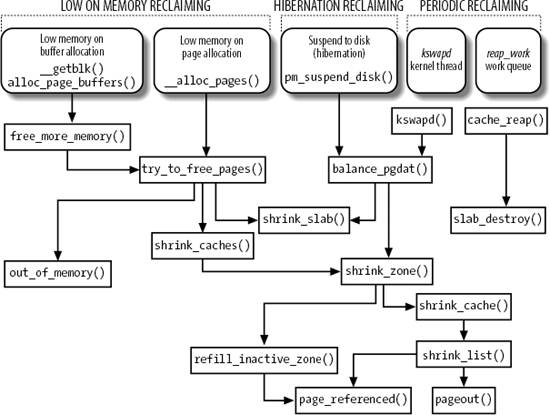
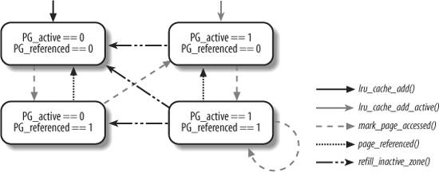
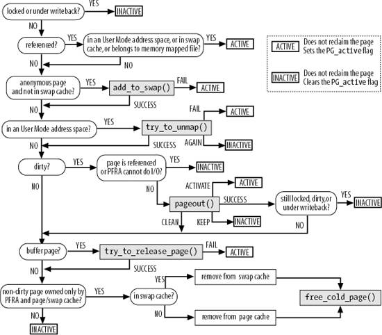

{% include JB/setup %}
{% raw %}
<div>


<a name="understandlk-CHP-17-SECT-3"></a>
<h3 class="docSection1Title" id="534871-864">17.3. Implementing the PFRA</h3><a name="IDX-CHP-17-4133"></a>
<a name="IDX-CHP-17-4134"></a>
<a name="IDX-CHP-17-4135"></a>
<a name="IDX-CHP-17-4136"></a>
<a name="IDX-CHP-17-4137"></a>
<a name="IDX-CHP-17-4138"></a>
<p class="docText1">The page frame reclaiming algorithm must take care of many kinds of pages owned by User Mode processes, disk caches and memory caches; moreover, it has to obey several heuristic rules. Thus, it is not surprising that the PFRA is composed of a large number of functions. <a class="pcalibre5 docLink pcalibre1" href="#understandlk-CHP-17-FIG-3">Figure 17-3</a> shows the main PFRA functions; an arrow denotes a function invocation, thus for instance <tt class="calibre25">try_to_free_pages( )</tt> invokes <tt class="calibre25">shrink_caches( )</tt>, <tt class="calibre25">shrink_slab( )</tt>, and <tt class="calibre25">out_of_memory( )</tt>.</p>
<p class="docText1">As you can see, there are several "entry points" for the PFRA. Actually, page frame reclaiming is performed on essentially three occasions:</p>
<dl class="docText1"><dt class="calibre7"><br class="calibre7"/><p class="calibre14"><span class="docPubcolor"><span class="docEmphasis">Low on memory reclaiming</span></span></p></dt>
<dd class="calibre20"><p class="docList">The kernel detects a "low on memory" condition.</p></dd><dt class="calibre7"><br class="calibre7"/><p class="calibre14"><span class="docPubcolor"><span class="docEmphasis">Hibernation reclaiming</span></span></p></dt>
<dd class="calibre20"><p class="docList">The kernel must free memory because it is entering in the suspend-to-disk state (we don't further discuss this case).</p></dd><dt class="calibre7"><br class="calibre7"/><p class="calibre14"><span class="docPubcolor"><span class="docEmphasis">Periodic reclaiming</span></span></p></dt>
<dd class="calibre20"><p class="docList">A kernel thread is activated periodically to perform memory reclaiming, if necessary.</p></dd></dl>
<a name="understandlk-CHP-17-FIG-3"></a><p class="calibre14"><center class="calibre8">
<h5 class="docFigureTitle">Figure 17-3. The main functions of the PFRA</h5>
</center></p><br class="calibre7"/>
<p class="docText1">Low on memory reclaiming is activated in the following cases:</p>
<ul class="calibre11"><li class="calibre12"><p class="docText1">The <tt class="calibre25">grow_buffers( )</tt> function, invoked by <tt class="calibre25">_ _getblk( )</tt>, fails to allocate a new buffer page (see the section "<a class="pcalibre5 docLink pcalibre1" href="understandlk-CHP-15-SECT-2.html#understandlk-CHP-15-SECT-2.6">Searching Blocks in the Page Cache</a>" in <a class="pcalibre5 docLink pcalibre1" href="understandlk-CHP-15.html#understandlk-CHP-15">Chapter 15</a>).</p></li><li class="calibre12"><p class="docText1">The <tt class="calibre25">alloc_page_buffers( )</tt> function, invoked by <tt class="calibre25">create_empty_buffers( )</tt>, fails to allocate the temporary buffer heads for a page (see the section "<a class="pcalibre5 docLink pcalibre1" href="understandlk-CHP-16-SECT-1.html#understandlk-CHP-16-SECT-1">Reading and Writing a File</a>" in <a class="pcalibre5 docLink pcalibre1" href="understandlk-CHP-16.html#understandlk-CHP-16">Chapter 16</a>).</p></li><li class="calibre12"><p class="docText1">The <tt class="calibre25">_ _alloc_pages( )</tt> function fails in allocating a group of contiguous page frames in a given list of memory zones (see the section "<a class="pcalibre5 docLink pcalibre1" href="understandlk-CHP-8-SECT-1.html#understandlk-CHP-8-SECT-1.7">The Buddy System Algorithm</a>" in <a class="pcalibre5 docLink pcalibre1" href="understandlk-CHP-8.html#understandlk-CHP-8">Chapter 8</a>).</p></li></ul>
<p class="docText1">Periodic reclaiming is activated by two different types of kernel threads:</p>
<ul class="calibre11"><li class="calibre12"><p class="docText1">The <span class="docEmphasis">kswapd</span><a name="IDX-CHP-17-4139"></a> 
 kernel threads, which check whether the number of free page frames in some memory zone has fallen below the <tt class="calibre25">pages_high</tt> watermark (see the later section "<a class="pcalibre5 docLink pcalibre1" href="#understandlk-CHP-17-SECT-3.4">Periodic Reclaiming</a>").</p></li><li class="calibre12"><p class="docText1">The <span class="docEmphasis">events</span><a name="IDX-CHP-17-4140"></a> 
 kernel threads, which are the worker threads of the predefined work queue (see the section "<a class="pcalibre5 docLink pcalibre1" href="understandlk-CHP-4-SECT-8.html#understandlk-CHP-4-SECT-8">Work Queues</a>" in <a class="pcalibre5 docLink pcalibre1" href="understandlk-CHP-4.html#understandlk-CHP-4">Chapter 4</a>); the PFRA periodically schedules the execution of a task in the predefined work queue to reclaim all free slabs included in the memory caches<a name="IDX-CHP-17-4141"></a> 
 handled by the slab allocator (see the section "<a class="pcalibre5 docLink pcalibre1" href="understandlk-CHP-8-SECT-2.html#understandlk-CHP-8-SECT-2.1">The Slab Allocator</a>" in <a class="pcalibre5 docLink pcalibre1" href="understandlk-CHP-8.html#understandlk-CHP-8">Chapter 8</a>).</p></li></ul>
<p class="docText1">We are now going to discuss in detail the various components of the page frame reclaiming algorithm, including all functions shown in <a class="pcalibre5 docLink pcalibre1" href="#understandlk-CHP-17-FIG-3">Figure 17-3</a>.</p>
<a name="understandlk-CHP-17-SECT-3.1"></a>
<h4 class="docSection2Title">17.3.1. The Least Recently Used (LRU) Lists</h4><a name="IDX-CHP-17-4142"></a>
<a name="IDX-CHP-17-4143"></a>
<a name="IDX-CHP-17-4144"></a>
<a name="IDX-CHP-17-4145"></a>
<a name="IDX-CHP-17-4146"></a>
<p class="docText1">All pages belonging to the User Mode address space of processes or to the page cache are grouped into two lists called the <span class="docEmphasis">active list</span><a name="IDX-CHP-17-4147"></a> 
 and the <span class="docEmphasis">inactive list</span><a name="IDX-CHP-17-4148"></a> 
; they are also collectively denoted as <span class="docEmphasis">LRU lists</span><a name="IDX-CHP-17-4149"></a> 
. The former list tends to include the pages that have been accessed recently, while the latter tends to include the pages that have not been accessed for some time. Clearly, pages should be stolen from the inactive list.</p>
<p class="docText1">The active list and the inactive list of pages are the core data structures of the page frame reclaiming algorithm. The heads of these two doubly linked lists are stored, respectively, in the <tt class="calibre25">active_list</tt> and <tt class="calibre25">inactive_list</tt> fields of each <tt class="calibre25">zone</tt> descriptor (see the section "<a class="pcalibre5 docLink pcalibre1" href="understandlk-CHP-8-SECT-1.html#understandlk-CHP-8-SECT-1.3">Memory Zones</a>" in <a class="pcalibre5 docLink pcalibre1" href="understandlk-CHP-8.html#understandlk-CHP-8">Chapter 8</a>). The <tt class="calibre25">nr_active</tt> and <tt class="calibre25">nr_inactive</tt> fields in the same descriptor store the number of pages in the two lists. Finally, the <tt class="calibre25">lru_lock</tt> field is a spin lock that protects the two lists against concurrent accesses in SMP systems.</p>
<p class="docText1">If a page belongs to an LRU list, its <tt class="calibre25">PG_lru</tt> flag in the page descriptor is set. Moreover, if the page belongs to the active list, the <tt class="calibre25">PG_active</tt> flag is set, while if it belongs to the inactive list, the <tt class="calibre25">PG_active</tt> flag is cleared. The <tt class="calibre25">lru</tt> field of the page descriptor stores the pointers to the next and previous elements in the LRU list.</p>
<p class="docText1">Several auxiliary functions are available to handle the LRU lists:</p>
<dl class="docText1"><dt class="calibre7"><br class="calibre7"/><p class="calibre14"><span class="docPubcolor"><span class="docPubcolor"><span class="docMonofont">add_page_to_active_list( )</span></span></span></p></dt>
<dd class="calibre20"><p class="docList">Adds the page to the head of the zone's active list and increases the <tt class="calibre25">nr_active</tt> field of the zone descriptor.</p></dd><dt class="calibre7"><br class="calibre7"/><p class="calibre14"><span class="docPubcolor"><span class="docPubcolor"><span class="docMonofont">add_page_to_inactive_list( )</span></span></span></p></dt>
<dd class="calibre20"><p class="docList">Adds the page to the head of the zone's inactive list and increases the <tt class="calibre25">nr_inactive</tt> field of the zone descriptor.</p></dd><dt class="calibre7"><br class="calibre7"/><p class="calibre14"><span class="docPubcolor"><span class="docPubcolor"><span class="docMonofont">del_page_from_active_list( )</span></span></span></p></dt>
<dd class="calibre20"><p class="docList">Removes the page from the zone's active list and decreases the <tt class="calibre25">nr_active</tt> field of the zone descriptor.</p></dd><dt class="calibre7"><br class="calibre7"/><p class="calibre14"><span class="docPubcolor"><span class="docPubcolor"><span class="docMonofont">del_page_from_inactive_list( )</span></span></span></p></dt>
<dd class="calibre20"><p class="docList">Removes the page from the zone's inactive list and decreases the <tt class="calibre25">nr_inactive</tt> field of the zone descriptor.</p></dd><dt class="calibre7"><br class="calibre7"/><p class="calibre14"><span class="docPubcolor"><span class="docPubcolor"><span class="docMonofont">del_page_from_lru( )</span></span></span></p></dt>
<dd class="calibre20"><p class="docList">Checks the <tt class="calibre25">PG_active</tt> flag of a page; according to the result, removes the page from the active or inactive list, decreases the <tt class="calibre25">nr_active</tt> or <tt class="calibre25">nr_inactive</tt> field of the zone descriptor, and clears, if necessary, the <tt class="calibre25">PG_active</tt> flag.</p></dd><dt class="calibre7"><br class="calibre7"/><p class="calibre14"><span class="docPubcolor"><span class="docPubcolor"><span class="docMonofont">activate_page( )</span></span></span></p></dt>
<dd class="calibre20"><p class="docList">Checks the <tt class="calibre25">PG_active</tt> flag; if it is clear (the page is in the inactive list), it moves the page into the active list: invokes <tt class="calibre25">del_page_from_inactive_list( )</tt>, then invokes <tt class="calibre25">add_page_to_active_list( )</tt>, and finally sets the <tt class="calibre25">PG_active</tt> flag. The zone's <tt class="calibre25">lru_lock</tt> spin lock is acquired before moving the page.</p></dd><dt class="calibre7"><br class="calibre7"/><p class="calibre14"><span class="docPubcolor"><span class="docPubcolor"><span class="docMonofont">lru_cache_add( )</span></span></span></p></dt>
<dd class="calibre20"><p class="docList">If the page is not included in an LRU list, it sets the <tt class="calibre25">PG_lru</tt> flag, acquires the zone's <tt class="calibre25">lru_lock</tt> spin lock, and invokes <tt class="calibre25">add_page_to_inactive_list( )</tt> to insert the page in the zone's inactive list.</p></dd><dt class="calibre7"><br class="calibre7"/><p class="calibre14"><span class="docPubcolor"><span class="docPubcolor"><span class="docMonofont">lru_cache_add_active( )</span></span></span></p></dt>
<dd class="calibre20"><p class="docList">If the page is not included in an LRU list, it sets the <tt class="calibre25">PG_lru</tt> and <tt class="calibre25">PG_active</tt> flags, acquires the zone's <tt class="calibre25">lru_lock</tt> spin lock, and invokes <tt class="calibre25">add_page_to_active_list( )</tt> to insert the page in the zone's active list.</p></dd></dl>
<p class="docText1">Actually, the last two functions, <tt class="calibre25">lru_cache_add( )</tt> and <tt class="calibre25">lru_cache_add_active( )</tt>, are slightly more complicated. In fact, the two functions do not immediately move the page into an LRU; instead, they accumulate the pages in temporary data structures of type <tt class="calibre25">pagevec</tt>, each of which may contain up to 14 page descriptor pointers. The pages will be effectively moved in an LRU list only when a <tt class="calibre25">pagevec</tt> structure is completely filled. This mechanism enhances the system performance, because the LRU spin lock is acquired only when the LRU lists are effectively modified.</p>
<a name="understandlk-CHP-17-SECT-3.1.1"></a>
<h5 class="docSection3Title">17.3.1.1. Moving pages across the LRU lists</h5><a name="IDX-CHP-17-4150"></a>
<a name="IDX-CHP-17-4151"></a>
<a name="IDX-CHP-17-4152"></a>
<a name="IDX-CHP-17-4153"></a>
<a name="IDX-CHP-17-4154"></a>
<p class="docText1">The PFRA collects the pages that were recently accessed in the active list so that it will not scan them when looking for a page frame to reclaim. Conversely, the PFRA collects the pages that have not been accessed for a long time in the inactive list. Of course, pages should move from the inactive list to the active list and back, according to whether they are being accessed.</p>
<p class="docText1">Clearly, two page states ("active" and "inactive") are not sufficient to describe all possible access patterns. For instance, suppose a logger process writes some data in a page once every hour. Although the page is "inactive" for most of the time, the access makes it "active," thus denying the reclaiming of the corresponding page frame, even if it is not going to be accessed for an entire hour. Of course, there is no general solution to this problem, because the PFRA has no way to predict the behavior of User Mode processes; however, it seems reasonable that pages should not change their status on every single access.</p>
<p class="docText1">The <tt class="calibre25">PG_referenced</tt> flag in the page descriptor is used to double the number of accesses required to move a page from the inactive list to the active list; it is also used to double the number of "missing accesses" required to move a page from the active list to the inactive list (see below). For instance, suppose that a page in the inactive list has the <tt class="calibre25">PG_referenced</tt> flag set to 0. The first page access sets the value of the flag to 1, but the page remains in the inactive list. The second page access finds the flag set and causes the page to be moved in the active list. If, however, the second access does not occur within a given time interval after the first one, the page frame reclaiming algorithm may reset the <tt class="calibre25">PG_referenced</tt> flag.</p>
<p class="docText1">As shown in <a class="pcalibre5 docLink pcalibre1" href="#understandlk-CHP-17-FIG-4">Figure 17-4</a>, the PFRA uses the <tt class="calibre25">mark_page_accessed( )</tt>, <tt class="calibre25">page_referenced( )</tt>, and <tt class="calibre25">refill_inactive_zone( )</tt> functions to move the pages across the LRU lists. In the figure, the LRU list including the page is specified by the status of the <tt class="calibre25">PG_active</tt> flag.</p>
<a name="understandlk-CHP-17-FIG-4"></a><p class="calibre14"><center class="calibre8">
<h5 class="docFigureTitle">Figure 17-4. Moving pages across the LRU lists</h5>
</center></p><br class="calibre7"/>
<a name="understandlk-CHP-17-SECT-3.1.2"></a>
<h5 class="docSection3Title">17.3.1.2. The mark_page_accessed( ) function</h5><a name="IDX-CHP-17-4155"></a>
<p class="docText1">Whenever the kernel must mark a page as accessed, it invokes the <tt class="calibre25">mark_page_accessed( )</tt> function. This happens every time the kernel determines that a page is being referenced by a User Mode process, a filesystem layer, or a device driver. For instance, <tt class="calibre25">mark_page_accessed( )</tt> is invoked in the following cases:</p>
<ul class="calibre11"><li class="calibre12"><p class="docText1">When loading on demand an anonymous page of a process (performed by the <tt class="calibre25">do_anonymous_page( )</tt> function; see the section "<a class="pcalibre5 docLink pcalibre1" href="understandlk-CHP-9-SECT-4.html#understandlk-CHP-9-SECT-4.3">Demand Paging</a>" in <a class="pcalibre5 docLink pcalibre1" href="understandlk-CHP-9.html#understandlk-CHP-9">Chapter 9</a>).</p></li><li class="calibre12"><p class="docText1">When loading on demand a page of a memory mapped file (performed by the <tt class="calibre25">filemap_nopage( )</tt> function; see the section "<a class="pcalibre5 docLink pcalibre1" href="understandlk-CHP-16-SECT-2.html#understandlk-CHP-16-SECT-2.4">Demand Paging for Memory Mapping</a>" in <a class="pcalibre5 docLink pcalibre1" href="understandlk-CHP-16.html#understandlk-CHP-16">Chapter 16</a>).</p></li><li class="calibre12"><p class="docText1">When loading on demand a page of an IPC shared memory region (performed by the <tt class="calibre25">shmem_nopage( )</tt> function; see the section "<a class="pcalibre5 docLink pcalibre1" href="understandlk-CHP-19-SECT-3.html#understandlk-CHP-19-SECT-3.5">IPC Shared Memory</a>" in <a class="pcalibre5 docLink pcalibre1" href="understandlk-CHP-19.html#understandlk-CHP-19">Chapter 19</a>).</p></li><li class="calibre12"><p class="docText1">When reading a page of data from a file (performed by the <tt class="calibre25">do_generic_file_read( )</tt> function; see the section "<a class="pcalibre5 docLink pcalibre1" href="understandlk-CHP-16-SECT-1.html#understandlk-CHP-16-SECT-1.1">Reading from a File</a>" in <a class="pcalibre5 docLink pcalibre1" href="understandlk-CHP-16.html#understandlk-CHP-16">Chapter 16</a>).</p></li><li class="calibre12"><p class="docText1">When swapping in a page (performed by the <tt class="calibre25">do_swap_page( )</tt> function; see the section "<a class="pcalibre5 docLink pcalibre1" href="understandlk-CHP-17-SECT-4.html#understandlk-CHP-17-SECT-4.8">Swapping in Pages</a>" later in this chapter).</p></li><li class="calibre12"><p class="docText1">When looking up a buffer page in the page cache (see the <tt class="calibre25">_ _find_get_block( )</tt> function in the section "<a class="pcalibre5 docLink pcalibre1" href="understandlk-CHP-15-SECT-2.html#understandlk-CHP-15-SECT-2.6">Searching Blocks in the Page Cache</a>" in <a class="pcalibre5 docLink pcalibre1" href="understandlk-CHP-15.html#understandlk-CHP-15">Chapter 15</a>).</p></li></ul>
<p class="docText1">The <tt class="calibre25">mark_page_accessed( )</tt> function executes the following code fragment:</p>
<pre class="calibre27">
if (!PageActive(page) &amp;&amp; PageReferenced(page) &amp;&amp; PageLRU(page)) {
    activate_page(page);
    ClearPageReferenced(page);
} else if (!PageReferenced(page))
    SetPageReferenced(page);</pre><br class="calibre7"/>
<p class="docText1">As shown in <a class="pcalibre5 docLink pcalibre1" href="#understandlk-CHP-17-FIG-4">Figure 17-4</a>, the function moves the page from the inactive list to the active list only if the <tt class="calibre25">PG_referenced</tt> flag is set before the invocation.</p>
<a name="understandlk-CHP-17-SECT-3.1.3"></a>
<h5 class="docSection3Title">17.3.1.3. The page_referenced( ) function</h5><a name="IDX-CHP-17-4156"></a>
<a name="IDX-CHP-17-4157"></a>
<a name="IDX-CHP-17-4158"></a>
<a name="IDX-CHP-17-4159"></a>
<a name="IDX-CHP-17-4160"></a>
<a name="IDX-CHP-17-4161"></a>
<p class="docText1">The <tt class="calibre25">page_referenced( )</tt> function, which is invoked once for every page scanned by the PFRA, returns 1 if either the <tt class="calibre25">PG_referenced</tt> flag or some of the <tt class="calibre25">Accessed</tt> bits in the Page Table entries was set; it returns 0 otherwise. This function first checks the <tt class="calibre25">PG_referenced</tt> flag of the page descriptor; if the flag is set, it clears it. Next, it makes use of the object-based reverse mapping mechanism to check and clear the <tt class="calibre25">Accessed</tt> bits in all User Mode Page Table entries that refer to the page frame. To do this, the function makes use of three ancillary functions; <tt class="calibre25">page_referenced_anon( )</tt>, <tt class="calibre25">page_referenced_file( )</tt>, and <tt class="calibre25">page_referenced_one( )</tt>, which are analogous to the <tt class="calibre25">try_to_unmap_xxx( )</tt> functions described in the section "<a class="pcalibre5 docLink pcalibre1" href="understandlk-CHP-17-SECT-2.html#understandlk-CHP-17-SECT-2">Reverse Mapping</a>" earlier in this chapter. The <tt class="calibre25">page_referenced( )</tt> function also honors the swap token; see the section "<a class="pcalibre5 docLink pcalibre1" href="#understandlk-CHP-17-SECT-3.6">The Swap Token</a>" later in this chapter.</p>
<p class="docText1">The <tt class="calibre25">page_referenced( )</tt> function never moves a page from the active list to the inactive list; this job is done by <tt class="calibre25">refill_inactive_zone( )</tt>. In practice, this function does a lot more than move pages from the active to the inactive list, so we are going to describe it in greater detail.</p>
<a name="understandlk-CHP-17-SECT-3.1.4"></a>
<h5 class="docSection3Title">17.3.1.4. The refill_inactive_zone( ) function</h5><a name="IDX-CHP-17-4162"></a>
<p class="docText1">As illustrated in <a class="pcalibre5 docLink pcalibre1" href="#understandlk-CHP-17-FIG-3">Figure 17-3</a>, the <tt class="calibre25">refill_inactive_zone( )</tt> function is invoked by <tt class="calibre25">shrink_zone( )</tt>, which performs the reclaiming of pages in the page cache and in the User Mode address spaces (see the section "<a class="pcalibre5 docLink pcalibre1" href="#understandlk-CHP-17-SECT-3.2">Low On Memory Reclaiming</a>" later in this chapter). The function receives two parameters: a pointer <tt class="calibre25">zone</tt> to a memory zone descriptor, and a pointer <tt class="calibre25">sc</tt> to a <tt class="calibre25">scan_control</tt> structure. The latter data structure is widely used by the PFRA and contains information about the ongoing reclaiming operation; its fields are shown in <a class="pcalibre5 docLink pcalibre1" href="#understandlk-CHP-17-TABLE-2">Table 17-2</a>.</p>
<a name="understandlk-CHP-17-TABLE-2"></a><p class="calibre14"><table cellspacing="0" frame="hsides" rules="all" cellpadding="4" width="100%" class="calibre15"><caption class="calibre33"><h5 class="docFigureTitle">Table 17-2. The fields of the scan_control descriptor</h5></caption><colgroup class="calibre16"><col class="calibre17"/><col class="calibre17"/><col class="calibre17"/></colgroup><thead class="calibre18"><tr class="calibre34"><th class="thead" scope="col"><p class="docText1"><span class="calibre5">Type</span></p></th><th class="thead" scope="col"><p class="docText1"><span class="calibre5">Field</span></p></th><th class="thead" scope="col"><p class="docText1"><span class="calibre5">Description</span></p></th></tr></thead><tr class="calibre2"><td class="docTableCell"><p class="docText2"><tt class="calibre25">unsigned long</tt></p></td><td class="docTableCell"><p class="docText2"><tt class="calibre25">nr_to_scan</tt></p></td><td class="docTableCell"><p class="docText2">Target number of pages to be scanned in the active list.</p></td></tr><tr class="calibre2"><td class="docTableCell"><p class="docText2"><tt class="calibre25">unsigned long</tt></p></td><td class="docTableCell"><p class="docText2"><tt class="calibre25">nr_scanned</tt></p></td><td class="docTableCell"><p class="docText2">Number of inactive pages scanned in the current iteration.</p></td></tr><tr class="calibre2"><td class="docTableCell"><p class="docText2"><tt class="calibre25">unsigned long</tt></p></td><td class="docTableCell"><p class="docText2"><tt class="calibre25">nr_reclaimed</tt></p></td><td class="docTableCell"><p class="docText2">Number of pages reclaimed in the current iteration.</p></td></tr><tr class="calibre2"><td class="docTableCell"><p class="docText2"><tt class="calibre25">unsigned long</tt></p></td><td class="docTableCell"><p class="docText2"><tt class="calibre25">nr_mapped</tt></p></td><td class="docTableCell"><p class="docText2">Number of pages referenced in the User Mode address spaces.</p></td></tr><tr class="calibre2"><td class="docTableCell"><p class="docText2">int</p></td><td class="docTableCell"><p class="docText2"><tt class="calibre25">nr_to_reclaim</tt></p></td><td class="docTableCell"><p class="docText2">Target number of pages to be reclaimed.</p></td></tr><tr class="calibre2"><td class="docTableCell"><p class="docText2">unsigned int</p></td><td class="docTableCell"><p class="docText2"><tt class="calibre25">priority</tt></p></td><td class="docTableCell"><p class="docText2">Priority of the scanning, ranging between 12 and 0. Lower priority implies scanning more pages.</p></td></tr><tr class="calibre2"><td class="docTableCell"><p class="docText2"><tt class="calibre25">unsigned int</tt></p></td><td class="docTableCell"><p class="docText2"><tt class="calibre25">gfp_mask</tt></p></td><td class="docTableCell"><p class="docText2">GFP mask passed from calling function.</p></td></tr><tr class="calibre2"><td class="docTableCell"><p class="docText2"><tt class="calibre25">int</tt></p></td><td class="docTableCell"><p class="docText2"><tt class="calibre25">may_writepage</tt></p></td><td class="docTableCell"><p class="docText2">If set, writing a dirty page to disk is allowed (only for laptop mode).</p></td></tr></table></p><br class="calibre7"/>
<p class="docText1">The role of <tt class="calibre25">refill_inactive_zone( )</tt> is critical because moving a page from an active list to an inactive list means making the page eligible to fall prey, sooner or later, to the PFRA. If the function is too aggressive, it will move a lot of pages from the active list to the inactive list; as a consequence, the PFRA will reclaim a large number of page frames, and the system performance will be hit. On the other hand, if the function is too lazy, the inactive list will not be replenished with a large enough number of unused pages, and the PFRA will fail in reclaiming memory. Thus, the function implements an adaptive behavior: it starts by scanning, at every invocation, a small number of pages in the active list; however, if the PFRA is having trouble in reclaiming page frames, <tt class="calibre25">refill_inactive_zone( )</tt> keeps increasing the number of active pages scanned at every invocation. This behavior is controlled by the value of the <tt class="calibre25">priority</tt> field in the <tt class="calibre25">scan_control</tt> data structure (a lower value means a more urgent priority).</p>
<p class="docText1">Another heuristic rule regulates the behavior of the <tt class="calibre25">refill_inactive_zone( )</tt> function. The LRU lists include two kinds of pages: those belonging to the User Mode address spaces, and those included in the page cache that do not belong to any User Mode process. As stated earlier, the PFRA should tend to shrink the page cache while leaving in RAM the pages owned by the User Mode processes. However, no fixed "golden rule" may yield good performance in every scenario, thus the <tt class="calibre25">refill_inactive_zone( )</tt> function relies on a <span class="docEmphasis">swap tendency</span><a name="IDX-CHP-17-4163"></a> 
 heuristic value: it determines whether the function will move all kinds of pages, or just the pages that do not belong to the User Mode address spaces.<sup class="docFootnote"><a class="pcalibre5 docLink pcalibre1" href="#understandlk-CHP-17-FN5">[*]</a></sup> The swap tendency value is computed by the function as follows:</p><blockquote class="calibre22"><p class="docFootnote1"><sup class="calibre24"><a name="understandlk-CHP-17-FN5">[*]</a></sup> The name "swap tendency" is a bit misleading, because the pages in User Mode address spaces can be swappable, syncable, or discardable. However, the swap tendency value<a name="IDX-CHP-17-4164"></a> 
 certainly controls the amount of swapping performed by the PFRA, because almost all swappable pages belong to the User Mode address spaces.</p></blockquote>
<blockquote class="calibre22">
<p class="docText1"><span class="docEmphasis">swap tendency</span> = <span class="docEmphasis">mapped ratio</span><a name="IDX-CHP-17-4165"></a> 
 / 2 + <span class="docEmphasis">distress</span> + <span class="docEmphasis">swappiness</span></p>
</blockquote>
<p class="docText1">The <span class="docEmphasis">mapped ratio</span> value is the percentage of pages in all memory zones that belong to User Mode address spaces (<tt class="calibre25">sc-&gt;nr_mapped</tt>) with respect to the total number of allocatable page frames. A high value of <tt class="calibre25">mapped_ratio</tt> means that the dynamic memory is mostly used by User Mode processes, while a low value means that it is mostly used by the page cache.</p>
<p class="docText1">The <span class="docEmphasis">distress</span> value is a measure of how effectively the PFRA is reclaiming page frames in this zone; it is based on the scanning priority of the zone in the previous run of the PFRA, which is stored in the <tt class="calibre25">prev_priority</tt> field of the <tt class="calibre25">zone</tt> descriptor. The distress value<a name="IDX-CHP-17-4166"></a> 
 depends on the zone's previous priority as follows:</p>
<p class="calibre14"><table cellspacing="0" border="1" rules="all" cellpadding="4" width="100%" class="calibre15"><colgroup class="calibre16"><col class="calibre17"/><col class="calibre17"/><col class="calibre17"/><col class="calibre17"/><col class="calibre17"/><col class="calibre17"/><col class="calibre17"/><col class="calibre17"/><col class="calibre17"/></colgroup><thead class="calibre18"/><tr class="calibre2"><td class="docTableCell"><p class="docText2">Zone prev. priority</p></td><td class="docTableCell"><p class="docText2">12...7</p></td><td class="docTableCell"><p class="docText2">6</p></td><td class="docTableCell"><p class="docText2">5</p></td><td class="docTableCell"><p class="docText2">4</p></td><td class="docTableCell"><p class="docText2">3</p></td><td class="docTableCell"><p class="docText2">2</p></td><td class="docTableCell"><p class="docText2">1</p></td><td class="docTableCell"><p class="docText2">0</p></td></tr><tr class="calibre2"><td class="docTableCell"><p class="docText2">Distress value</p></td><td class="docTableCell"><p class="docText2">0</p></td><td class="docTableCell"><p class="docText2">1</p></td><td class="docTableCell"><p class="docText2">3</p></td><td class="docTableCell"><p class="docText2">6</p></td><td class="docTableCell"><p class="docText2">12</p></td><td class="docTableCell"><p class="docText2">25</p></td><td class="docTableCell"><p class="docText2">50</p></td><td class="docTableCell"><p class="docText2">100</p></td></tr></table></p><br class="calibre7"/>
<p class="docText1">Finally, the <span class="docEmphasis">swappiness</span><a name="IDX-CHP-17-4167"></a> 
 value is a user-defined constant, which is usually set to 60. The system administrator may tune this value by writing in the <i class="docEmphasis">/proc/sys/vm/swappiness</i> file or by issuing the proper <tt class="calibre25">sysctl( )</tt><a name="IDX-CHP-17-4168"></a> 
 system call.</p>
<p class="docText1">Pages will be reclaimed from the address spaces of processes only if the zone's swap tendency is greater than or equal to 100. Thus, if the system administrator sets swappiness to 0, then the PFRA never reclaims pages in the User Mode address spaces unless the zone's previous priority is zero (an unlikely event); if the administrator sets swappiness to 100, then the PFRA reclaims pages in the User Mode address spaces at every invocation.</p>
<p class="docText1">Here is a succinct description of what the <tt class="calibre25">refill_inactive_zone( )</tt> function does:</p>
<div class="calibre44"><ol class="docList1" type="1"><li class="calibre12"><div class="calibre45"><p class="docList">Invokes <tt class="calibre25">lru_add_drain( )</tt> to move into the active and inactive lists any page still contained in the <tt class="calibre25">pagevec</tt> data structures.</p></div></li><li class="calibre12"><div class="calibre45"><p class="docList">Gets the <tt class="calibre25">zone-&gt;lru_lock</tt> spin lock.</p></div></li><li class="calibre12"><div class="calibre45"><p class="docList">Performs a first cycle scanning the pages in <tt class="calibre25">zone-&gt;active_list</tt>, starting from the tail of the list and moving backwards. Continues until the list is empty or until <tt class="calibre25">sc-&gt;nr_to_scan</tt> pages have been scanned. For each page scanned in this cycle, the function increases by one its reference counter, removes the page descriptor from <tt class="calibre25">zone-&gt;active_list</tt>, and puts it in a temporary <tt class="calibre25">l_hold</tt> local list. However, if the reference counter of the page frame was zero, it puts back the page in the active list. In fact, page frames having a reference counter equal to zero should belong to the zone's Buddy system; however, to free a page frame, first its usage counter is decreased and then the page frame is removed from the LRU lists and inserted in the buddy system's list. Therefore, there is a small time window in which the PFRA may see a free page in an LRU list.</p></div></li><li class="calibre12"><div class="calibre45"><p class="docList">Adds to <tt class="calibre25">zone-&gt;pages_scanned</tt> the number of active pages that have been scanned.</p></div></li><li class="calibre12"><div class="calibre45"><p class="docList">Subtracts from <tt class="calibre25">zone-&gt;nr_active</tt> the number of pages that have been moved into the <tt class="calibre25">l_hold</tt> local list.</p></div></li><li class="calibre12"><div class="calibre45"><p class="docList">Releases the <tt class="calibre25">zone-&gt;lru_lock</tt> spin lock.</p></div></li><li class="calibre12"><div class="calibre45"><p class="docList">Computes the swap tendency value (see above).</p></div></li><li class="calibre12"><div class="calibre45"><p class="docList">Performs a second cycle on the pages in the <tt class="calibre25">l_hold</tt> local list. The objective of this cycle is to split the pages of <tt class="calibre25">l_hold</tt> into two local sublists called <tt class="calibre25">l_active</tt> and <tt class="calibre25">l_inactive</tt>. A page belonging to the User Mode address space of some processthat is, a page whose <tt class="calibre25">page-&gt;_mapcount</tt> is nonnegativeis added to <tt class="calibre25">l_active</tt> if the swap tendency value is smaller than 100, or if the page is anonymous but no swap area is active, or finally if the <tt class="calibre25">page_referenced( )</tt> function applied to the page returns a positive value, which means that the page has been recently accessed. In all other cases, the page is added to the <tt class="calibre25">l_inactive</tt> list.<sup class="docFootnote"><a class="pcalibre5 docLink pcalibre1" href="#understandlk-CHP-17-FN6">[*]</a></sup></p><blockquote class="calibre22"><p class="docFootnote2"><sup class="calibre24"><a name="understandlk-CHP-17-FN6">[*]</a></sup> Notice that a page that does not belong to any User Mode process address space is moved into the inactive list; however, since its <tt class="calibre42">PG_referenced</tt> flag is not cleared, the first access to the page causes the <tt class="calibre42">mark_page_accessed( )</tt> function to move the page back into the active list (see <a class="pcalibre5 docLink pcalibre1" href="#understandlk-CHP-17-FIG-4">Figure 17-4</a>).</p></blockquote></div></li><li class="calibre12"><div class="calibre45"><p class="docList">Gets the <tt class="calibre25">zone-&gt;lru_lock</tt> spin lock.</p></div></li><li class="calibre12"><div class="calibre45"><p class="docList">Performs a third cycle on the pages in the <tt class="calibre25">l_inactive</tt> local list to move them in the <tt class="calibre25">zone-&gt;inactive_list</tt> list and updates the <tt class="calibre25">zone-&gt;nr_inactive</tt> field. In doing so, it decreases the usage counters of the moved page frames to undo the increments done in step 3.</p></div></li><li class="calibre12"><div class="calibre45"><p class="docList">Performs a fourth and last cycle on the pages in the <tt class="calibre25">l_active</tt> local list to move them into the <tt class="calibre25">zone-&gt;active_list</tt> list and updates the <tt class="calibre25">zone-&gt;nr_active</tt> field. In doing so, it decreases the usage counters of the moved page frames to undo the increments done in step 3.</p></div></li><li class="calibre12"><div class="calibre45"><p class="docList">Releases the <tt class="calibre25">zone-&gt;lru_lock</tt> spin lock and returns.</p></div></li></ol></div>
<p class="docText1">It should be noted that <tt class="calibre25">refill_inactive_zone( )</tt> checks the <tt class="calibre25">PG_referenced</tt> flag only for pages that belong to the User Mode address spaces (see step 8); in the opposite case, the pages are in the tail of the active listhence they were accessed some time agoand it is unlikely that they will be accessed in the near future. On the other hand, the function does not evict a page from the active list if it is owned by some User Mode process and has been recently used.</p>
<a name="understandlk-CHP-17-SECT-3.2"></a>
<h4 class="docSection2Title">17.3.2. Low On Memory Reclaiming</h4><a name="IDX-CHP-17-4169"></a>
<p class="docText1">Low on memory reclaiming is activated when a memory allocation fails. As shown in <a class="pcalibre5 docLink pcalibre1" href="#understandlk-CHP-17-FIG-3">Figure 17-3</a>, the kernel invokes <tt class="calibre25">free_more_memory( )</tt> while allocating a VFS buffer or a buffer head, and it invokes <tt class="calibre25">try_to_free_pages( )</tt> while allocating one or more page frames from the buddy system.</p>
<a name="understandlk-CHP-17-SECT-3.2.1"></a>
<h5 class="docSection3Title">17.3.2.1. The free_more_memory( ) function</h5>
<p class="docText1">The <tt class="calibre25">free_more_memory( )</tt> function performs the following actions:</p>
<div class="calibre44"><ol class="docList1" type="1"><li class="calibre12"><div class="calibre45"><p class="docList">Invokes <tt class="calibre25">wakeup_bdflush( )</tt> to wake a <span class="docEmphasis">pdflush</span><a name="IDX-CHP-17-4170"></a> 
 kernel thread and trigger write operations for 1024 dirty pages in the page cache (see the section "<a class="pcalibre5 docLink pcalibre1" href="understandlk-CHP-15-SECT-3.html#understandlk-CHP-15-SECT-3.1">The pdflush Kernel Threads</a>" in <a class="pcalibre5 docLink pcalibre1" href="understandlk-CHP-15.html#understandlk-CHP-15">Chapter 15</a>). Writing dirty pages to disk may eventually make freeable the page frames containing buffers, buffers heads, and other VFS data structures.</p></div></li><li class="calibre12"><div class="calibre45"><p class="docList">Invokes the service routine of the <tt class="calibre25">sched_yield( )</tt><a name="IDX-CHP-17-4171"></a> 
 system call to give the <span class="docEmphasis">pdflush</span><a name="IDX-CHP-17-4172"></a> 
 kernel thread a chance to run.</p></div></li><li class="calibre12"><div class="calibre45"><p class="docList">Starts a loop over all memory nodes in the system (see the section "<a class="pcalibre5 docLink pcalibre1" href="understandlk-CHP-8-SECT-1.html#understandlk-CHP-8-SECT-1.2">Non-Uniform Memory Access (NUMA)</a>" in <a class="pcalibre5 docLink pcalibre1" href="understandlk-CHP-8.html#understandlk-CHP-8">Chapter 8</a>). For each node, invokes the <tt class="calibre25">try_to_free_pages( )</tt> function passing to it a list of the "low" memory zones (in the 80 x 86 architecture, <tt class="calibre25">ZONE_DMA</tt> and <tt class="calibre25">ZONE_NORMAL</tt>; see the section "<a class="pcalibre5 docLink pcalibre1" href="understandlk-CHP-8-SECT-1.html#understandlk-CHP-8-SECT-1.3">Memory Zones</a>" in <a class="pcalibre5 docLink pcalibre1" href="understandlk-CHP-8.html#understandlk-CHP-8">Chapter 8</a>).</p></div></li></ol></div>
<a name="understandlk-CHP-17-SECT-3.2.2"></a>
<h5 class="docSection3Title">17.3.2.2. The try_to_free_pages( ) function</h5><a name="IDX-CHP-17-4173"></a>
<p class="docText1">The <tt class="calibre25">TRy_to_free_pages( )</tt> function receives three parameters:</p>
<dl class="docText1"><dt class="calibre7"><br class="calibre7"/><p class="calibre14"><span class="docPubcolor"><span class="docPubcolor"><span class="docMonofont">zones</span></span></span></p></dt>
<dd class="calibre20"><p class="docList">A list of memory zones in which pages should be reclaimed (see the section "<a class="pcalibre5 docLink pcalibre1" href="understandlk-CHP-8-SECT-1.html#understandlk-CHP-8-SECT-1.3">Memory Zones</a>" in <a class="pcalibre5 docLink pcalibre1" href="understandlk-CHP-8.html#understandlk-CHP-8">Chapter 8</a>)</p></dd><dt class="calibre7"><br class="calibre7"/><p class="calibre14"><span class="docPubcolor"><span class="docPubcolor"><span class="docMonofont">gfp_mask</span></span></span></p></dt>
<dd class="calibre20"><p class="docList">The set of allocation flags that were used by the failed memory allocation (see the section "<a class="pcalibre5 docLink pcalibre1" href="understandlk-CHP-8-SECT-1.html#understandlk-CHP-8-SECT-1.5">The Zoned Page Frame Allocator</a>" in <a class="pcalibre5 docLink pcalibre1" href="understandlk-CHP-8.html#understandlk-CHP-8">Chapter 8</a>)</p></dd><dt class="calibre7"><br class="calibre7"/><p class="calibre14"><span class="docPubcolor"><span class="docPubcolor"><span class="docMonofont">order</span></span></span></p></dt>
<dd class="calibre20"><p class="docList">Not used</p></dd></dl>
<p class="docText1">The goal of the function is to free at least 32 page frames by repeatedly invoking the <tt class="calibre25">shrink_caches( )</tt> and <tt class="calibre25">shrink_slab( )</tt> functions, each time with a higher priority than the previous invocation. The ancillary functions get the priority levelas well as other parameters of the ongoing scan operationin a descriptor of type <tt class="calibre25">scan_control</tt> (see <a class="pcalibre5 docLink pcalibre1" href="#understandlk-CHP-17-TABLE-2">Table 17-2</a> earlier in this chapter). The lowest, initial priority level is 12, while the highest, final priority level is 0. If <tt class="calibre25">TRy_to_free_pages( )</tt> does not succeed in reclaiming at least 32 page frames in one of the 13 repeated invocations of <tt class="calibre25">shrink_caches( )</tt> and <tt class="calibre25">shrink_slab( )</tt>, the PFRA is in serious trouble, and it has just one last resort: killing a process to free all its page frames. This operation is performed by the <tt class="calibre25">out_of_memory( )</tt> function (see the section "<a class="pcalibre5 docLink pcalibre1" href="#understandlk-CHP-17-SECT-3.5">The Out of Memory Killer</a>" later in this chapter).</p>
<p class="docText1">The function performs the following main steps:</p>
<div class="calibre44"><ol class="docList1" type="1"><li class="calibre12"><div class="calibre45"><p class="docList">Allocates and initializes a <tt class="calibre25">scan_control</tt> descriptor. In particular, stores the <tt class="calibre25">gfp_mask</tt> allocation mask in the <tt class="calibre25">gfp_mask</tt> field.</p></div></li><li class="calibre12"><div class="calibre45"><p class="docList">For each zone in the <tt class="calibre25">zones</tt> lists, it sets the <tt class="calibre25">temp_priority</tt> field of the zone descriptor to the initial priority (12). Moreover, it computes the total number of pages contained in the LRU lists of the zones.</p></div></li><li class="calibre12"><div class="calibre45"><p class="docList">Performs a loop of at most 13 iterations, from priority 12 down to 0; in each iteration performs the following substeps:</p><div class="calibre44"><ol class="docList4" type="a"><li class="calibre12"><div class="calibre45"><p class="docList">Updates some field of the <tt class="calibre25">scan_control</tt> descriptor. In particular, it stores in the <tt class="calibre25">nr_mapped</tt> field the total number of pages owned by User Mode processes, and in the <tt class="calibre25">priority</tt> field the current priority of this iteration. Also, it sets to zero the <tt class="calibre25">nr_scanned</tt> and <tt class="calibre25">nr_reclaimed</tt> fields.</p></div></li><li class="calibre12"><div class="calibre45"><p class="docList">Invokes <tt class="calibre25">shrink_caches( )</tt> passing as arguments the <tt class="calibre25">zones</tt> list and the address of the <tt class="calibre25">scan_control</tt> descriptor. This function scans the inactive pages of the zones (see below).</p></div></li><li class="calibre12"><div class="calibre45"><p class="docList">Invokes <tt class="calibre25">shrink_slab( )</tt> to reclaim pages from the shrinkable kernel caches (see the section "<a class="pcalibre5 docLink pcalibre1" href="#understandlk-CHP-17-SECT-3.3">Reclaiming Pages of Shrinkable Disk Caches</a>" later in this chapter).</p></div></li><li class="calibre12"><div class="calibre45"><p class="docList">If the <tt class="calibre25">current-&gt;reclaim_state</tt> field is not <tt class="calibre25">NULL</tt>, it adds to the <tt class="calibre25">nr_reclaimed</tt> field of the <tt class="calibre25">scan_control</tt> descriptor the number of pages reclaimed from the slab allocator caches; this number is stored in a small data structure pointed to by the process descriptor field. The <tt class="calibre25">_ _alloc_pages( )</tt> function sets up the <tt class="calibre25">current-&gt;reclaim_state</tt> field before invoking the <tt class="calibre25">TRy_to_free_pages( )</tt> function, and clears the field right after its termination. (Oddly, the <tt class="calibre25">free_more_memory( )</tt> function does not set this field.)</p></div></li><li class="calibre12"><div class="calibre45"><p class="docList">If the target has been reached (the <tt class="calibre25">nr_reclaimed</tt> field of the <tt class="calibre25">scan_control</tt> descriptor is greater than or equal to 32), it breaks the loop and jumps to step 4.</p></div></li><li class="calibre12"><div class="calibre45"><p class="docList">The target has not yet been reached. If at least 49 pages have been scanned so far, the function invokes <tt class="calibre25">wakeup_bdflush( )</tt> to activate a <span class="docEmphasis">pdflush</span><a name="IDX-CHP-17-4174"></a> 
 kernel thread and write some dirty pages in the page cache to disk (see the section "<a class="pcalibre5 docLink pcalibre1" href="understandlk-CHP-15-SECT-3.html#understandlk-CHP-15-SECT-3.2">Looking for Dirty Pages To Be Flushed</a>" in <a class="pcalibre5 docLink pcalibre1" href="understandlk-CHP-15.html#understandlk-CHP-15">Chapter 15</a>).</p></div></li><li class="calibre12"><div class="calibre45"><p class="docList">If the function has already performed four iterations without reaching the target, it invokes <tt class="calibre25">blk_congestion_wait( )</tt> to suspend the current process until any <tt class="calibre25">WRITE</tt> request queue becomes uncongested or until a 100 ms time-out elapses (see the section "<a class="pcalibre5 docLink pcalibre1" href="understandlk-CHP-14-SECT-3.html#understandlk-CHP-14-SECT-3.2">Request Descriptors</a>" in <a class="pcalibre5 docLink pcalibre1" href="understandlk-CHP-14.html#understandlk-CHP-14">Chapter 14</a>).</p></div></li></ol></div></div></li><li class="calibre12"><div class="calibre45"><p class="docList">Sets the <tt class="calibre25">prev_priority</tt> field of each zone descriptor to the priority level used in the last invocation of <tt class="calibre25">shrink_caches( )</tt>; it is stored in the <tt class="calibre25">temp_priority</tt> field of the zone descriptor.</p></div></li><li class="calibre12"><div class="calibre45"><p class="docList">Returns 1 if the reclaiming was successful, 0 otherwise.</p></div></li></ol></div>
<a name="understandlk-CHP-17-SECT-3.2.3"></a>
<h5 class="docSection3Title">17.3.2.3. The shrink_caches( ) function</h5><a name="IDX-CHP-17-4175"></a>
<p class="docText1">The <tt class="calibre25">shrink_caches( )</tt> function is invoked by <tt class="calibre25">TRy_to_free_pages( )</tt>. It acts on two parameters: the <tt class="calibre25">zones</tt> list of memory zones, and the address <tt class="calibre25">sc</tt> of a <tt class="calibre25">scan_control</tt> descriptor.</p>
<p class="docText1">The purpose of this function is simply to invoke the <tt class="calibre25">shrink_zone( )</tt> function on each zone in the <tt class="calibre25">zones</tt> list. However, before invoking <tt class="calibre25">shrink_zone( )</tt> on a given zone, <tt class="calibre25">shrink_caches( )</tt> updates the <tt class="calibre25">temp_priority</tt> field of the zone's descriptor by using the value stored in the <tt class="calibre25">sc-&gt;priority</tt> field; this is the current priority level of the scanning operation. Moreover, if the priority value of the previous invocation of the PFRA is higher than the current priority valuethat is, page frame reclaiming in this zone is now harder to do<tt class="calibre25">shrink_caches( )</tt> copies the current priority level into the <tt class="calibre25">prev_priority</tt> field of the zone descriptor. Finally, <tt class="calibre25">shrink_caches( )</tt> does not invoke <tt class="calibre25">shrink_zone( )</tt> on a given zone if the <tt class="calibre25">all_unreclaimable</tt> flag in the zone descriptor is set and the current priority level is less than 12that is, <tt class="calibre25">shrink_caches( )</tt> is not being invoked in the very first iteration of <tt class="calibre25">try_to_free_pages( )</tt>. The PFRA sets the <tt class="calibre25">all_unreclaimable</tt> flag when it decides that a zone is so full of unreclaimable pages that scanning the zone's pages is just a waste of time.</p>
<a name="understandlk-CHP-17-SECT-3.2.4"></a>
<h5 class="docSection3Title">17.3.2.4. The shrink_zone( ) function</h5><a name="IDX-CHP-17-4176"></a>
<p class="docText1">The <tt class="calibre25">shrink_zone( )</tt> function acts on two parameters: <tt class="calibre25">zone</tt>, a pointer to a <tt class="calibre25">struct_zone</tt> descriptor, and <tt class="calibre25">sc</tt>, a pointer to a <tt class="calibre25">scan_control</tt> descriptor. The goal of this function is to reclaim 32 pages from the zone's inactive list; the function tries to reach this goal by invoking repeatedly an auxiliary function called <tt class="calibre25">shrink_cache( )</tt>, each time on larger portion of the zone's inactive list. Moreover, <tt class="calibre25">shrink_zone( )</tt> replenishes the zone's inactive list by repeatedly invoking the <tt class="calibre25">refill_inactive_zone( )</tt> function described in the earlier section "<a class="pcalibre5 docLink pcalibre1" href="#understandlk-CHP-17-SECT-3.1">The Least Recently Used (LRU) Lists</a>."</p>
<p class="docText1">The <tt class="calibre25">nr_scan_active</tt> and <tt class="calibre25">nr_scan_inactive</tt> fields of the zone descriptor play a special role here. To be efficient, the function works on batches of 32 pages. Thus, if the function is running at a low privilege level (high value of <tt class="calibre25">sc-&gt;priority</tt>) and one of the LRU lists does not contain enough pages, the function skips the scanning on that list. However, the number of active or inactive pages thus skipped is recorded in <tt class="calibre25">nr_scan_active</tt> or <tt class="calibre25">nr_scan_inactive</tt>, so that the skipped pages will be considered in the next invocation of the function.</p>
<p class="docText1">Specifically, the <tt class="calibre25">shrink_zone( )</tt> function performs the following steps:</p>
<div class="calibre44"><ol class="docList1" type="1"><li class="calibre12"><div class="calibre45"><p class="docList">Increases the <tt class="calibre25">zone-&gt;nr_scan_active</tt> by a fraction of the total number of elements in the active list (<tt class="calibre25">zone-&gt;nr_active</tt>). The actual increment is determined by the current priority level and ranges from <tt class="calibre25">zone-&gt;nr_active</tt>/2<sup class="calibre37">12</sup> to <tt class="calibre25">zone-&gt;nr_active</tt>/2<sup class="calibre37">0</sup> (i.e., the whole number of active pages in the zone).</p></div></li><li class="calibre12"><div class="calibre45"><p class="docList">Increases the <tt class="calibre25">zone-&gt;nr_scan_inactive</tt> by a fraction of the total number of elements in the active list (<tt class="calibre25">zone-&gt;nr_inactive</tt>). The actual increment is determined by the current priority level and ranges from <tt class="calibre25">zone-&gt;nr_inactive</tt>/2<sup class="calibre37">12</sup> to <tt class="calibre25">zone-&gt;nr_inactive</tt>.</p></div></li><li class="calibre12"><div class="calibre45"><p class="docList">If the <tt class="calibre25">zone-&gt;nr_scan_active</tt> field is greater than or equal to 32, the function copies its value in the <tt class="calibre25">nr_active</tt> local variable and sets the field to zero; otherwise, it sets <tt class="calibre25">nr_active</tt> to zero.</p></div></li><li class="calibre12"><div class="calibre45"><p class="docList">If the <tt class="calibre25">zone-&gt;nr_scan_inactive</tt> field is greater than or equal to 32, the function copies its value in the <tt class="calibre25">nr_inactive</tt> local variable and sets the field to zero; otherwise, it sets <tt class="calibre25">nr_inactive</tt> to zero.</p></div></li><li class="calibre12"><div class="calibre45"><p class="docList">Sets the <tt class="calibre25">sc-&gt;nr_to_reclaim</tt> field of the <tt class="calibre25">scan_control</tt> descriptor to 32.</p></div></li><li class="calibre12"><div class="calibre45"><p class="docList">If both <tt class="calibre25">nr_active</tt> and <tt class="calibre25">nr_inactive</tt> are 0, there is nothing to be done: the function terminates. This is an unlikely situation where User Mode processes have no page frames allocated to them.</p></div></li><li class="calibre12"><div class="calibre45"><p class="docList">If <tt class="calibre25">nr_active</tt> is positive, it replenishes the zone's inactive list:</p><pre class="calibre60">
sc-&gt;nr_to_scan = min(nr_active, 32);
nr_active -= sc-&gt;nr_to_scan;
refill_inactive_zone(zone, sc);
</pre><br class="calibre7"/>
</div></li><li class="calibre12"><div class="calibre45"><p class="docList">If <tt class="calibre25">nr_inactive</tt> is positive, it tries to reclaim at most 32 pages from the inactive list:</p><pre class="calibre60">
sc-&gt;nr_to_scan = min(nr_inactive, 32);
nr_inactive -= sc-&gt;nr_to_scan;
shrink_cache(zone, sc);
</pre><br class="calibre7"/>
</div></li><li class="calibre12"><div class="calibre45"><p class="docList">If <tt class="calibre25">shrink_zone( )</tt> succeeds in reclaiming 32 pages (<tt class="calibre25">sc-&gt;nr_to_reclaim</tt> is now zero or negative), it terminates. Otherwise, it jumps back to step 6.</p></div></li></ol></div>
<a name="understandlk-CHP-17-SECT-3.2.5"></a>
<h5 class="docSection3Title">17.3.2.5. The shrink_cache( ) function</h5><a name="IDX-CHP-17-4177"></a>
<p class="docText1">The <tt class="calibre25">shrink_cache( )</tt> function is yet another auxiliary function whose main purpose is to extract from the zone's inactive list a group of pages, put them in a temporary list, and invoke the <tt class="calibre25">shrink_list( )</tt> function to effectively perform page frame reclaiming on every page in that list. The <tt class="calibre25">shrink_cache( )</tt> function acts on the same parameters as <tt class="calibre25">shrink_zones( )</tt>, namely <tt class="calibre25">zone</tt> and <tt class="calibre25">sc</tt>, and performs the following main steps:</p>
<div class="calibre44"><ol class="docList1" type="1"><li class="calibre12"><div class="calibre45"><p class="docList">Invokes <tt class="calibre25">lru_add_drain( )</tt> to move into the active and inactive lists any page still contained in the <tt class="calibre25">pagevec</tt> data structures (see the section "<a class="pcalibre5 docLink pcalibre1" href="#understandlk-CHP-17-SECT-3.1">The Least Recently Used (LRU) Lists</a>" earlier in this chapter).</p></div></li><li class="calibre12"><div class="calibre45"><p class="docList">Gets the <tt class="calibre25">zone-&gt;lru_lock</tt> spin lock.</p></div></li><li class="calibre12"><div class="calibre45"><p class="docList">Considers at most 32 pages in the inactive list; for each page, the function increases its usage counter, checks whether the page is not being freed to the buddy system (see the discussion at step 3 of <tt class="calibre25">refill_inactive_zone( )</tt>), and moves the page from the zone's inactive list to a local list.</p></div></li><li class="calibre12"><div class="calibre45"><p class="docList">Decreases the counter <tt class="calibre25">zone-&gt;nr_inactive</tt> by the number of pages removed from the inactive list.</p></div></li><li class="calibre12"><div class="calibre45"><p class="docList">Increases the counter <tt class="calibre25">zone-&gt;pages_scanned</tt> by the number of pages effectively examined in the inactive list.</p></div></li><li class="calibre12"><div class="calibre45"><p class="docList">Releases the <tt class="calibre25">zone-&gt;lru_lock</tt> spin lock.</p></div></li><li class="calibre12"><div class="calibre45"><p class="docList">Invokes the <tt class="calibre25">shrink_list( )</tt> function passing to it the (local list of) pages collected in step 3 above. This function is discussed below (as you were no doubt expecting).</p></div></li><li class="calibre12"><div class="calibre45"><p class="docList">Decreases the <tt class="calibre25">sc-&gt;nr_to_reclaim</tt> field by the number of pages actually reclaimed by <tt class="calibre25">shrink_list( )</tt>.</p></div></li><li class="calibre12"><div class="calibre45"><p class="docList">Gets again the <tt class="calibre25">zone-&gt;lru_lock</tt> spin lock.</p></div></li><li class="calibre12"><div class="calibre45"><p class="docList">Puts back in the inactive or active list all pages of the local list that <tt class="calibre25">shrink_list( )</tt> did not succeed in freeing. Notice that <tt class="calibre25">shrink_list( )</tt> might mark a page as active by setting its <tt class="calibre25">PG_active</tt> flag. This operation is performed in a batch of pages using a <tt class="calibre25">pagevec</tt> data structure (see the section "<a class="pcalibre5 docLink pcalibre1" href="#understandlk-CHP-17-SECT-3.1">The Least Recently Used (LRU) Lists</a>" earlier in this chapter).</p></div></li><li class="calibre12"><div class="calibre45"><p class="docList">If the function scanned at least <tt class="calibre25">sc-&gt;nr_to_scan</tt> pages, and if it didn't succeed in reclaiming the target number of pages (i.e., <tt class="calibre25">sc-&gt;nr_to_reclaim</tt> is still positive), it jumps back to step 3.</p></div></li><li class="calibre12"><div class="calibre45"><p class="docList">Releases the <tt class="calibre25">zone-&gt;lru_lock</tt> spin lock and terminates.</p></div></li></ol></div>
<a name="understandlk-CHP-17-SECT-3.2.6"></a>
<h5 class="docSection3Title">17.3.2.6. The shrink_list( ) function</h5><a name="IDX-CHP-17-4178"></a>
<a name="IDX-CHP-17-4179"></a>
<p class="docText1">We have now reached the heart of page frame reclaiming. While the purpose of the functions illustrated so far, from <tt class="calibre25">try_to_free_pages( )</tt> to <tt class="calibre25">shrink_cache( )</tt>, was to select the proper set of pages candidates for reclaiming, the <tt class="calibre25">shrink_list( )</tt> function effectively tries to reclaim the pages passed as a parameter in the <tt class="calibre25">page_list</tt> list. The second parameter, namely <tt class="calibre25">sc</tt>, is the usual pointer to a <tt class="calibre25">scan_control</tt> descriptor. When <tt class="calibre25">shrink_list( )</tt> returns, <tt class="calibre25">page_list</tt> contains the pages that couldn't be freed.</p>
<p class="docText1">The function performs the following actions:</p>
<div class="calibre44"><ol class="docList1" type="1"><li class="calibre12"><div class="calibre45"><p class="docList">If the <tt class="calibre25">need_resched</tt> field of the current process is set, it invokes <tt class="calibre25">schedule( )</tt>.</p></div></li><li class="calibre12"><div class="calibre45"><p class="docList">Starts a cycle on every page descriptor included in the <tt class="calibre25">page_list</tt> list. For each list item, it removes the page descriptor from the list and tries to reclaim the page frame; if for some reason the page frame could not be freed, it inserts the page descriptor in a local list.</p></div></li><li class="calibre12"><div class="calibre45"><p class="docList">Now the <tt class="calibre25">page_list</tt> list is empty: the function moves back the page descriptors from the local list to the <tt class="calibre25">page_list</tt> list.</p></div></li><li class="calibre12"><div class="calibre45"><p class="docList">Increases the <tt class="calibre25">sc-&gt;nr_reclaimed</tt> field by the number of page frames reclaimed in step 2, and returns that number.</p></div></li></ol></div>
<p class="docText1">Of course, what is really interesting in <tt class="calibre25">shrink_list( )</tt> is the code that tries to reclaim a page frame. The flow diagram of this code is shown in <a class="pcalibre5 docLink pcalibre1" href="#understandlk-CHP-17-FIG-5">Figure 17-5</a>.</p>
<p class="docText1">There are only three possible outcomes for each page frame handled by <tt class="calibre25">shrink_list( )</tt>:</p>
<ul class="calibre11"><li class="calibre12"><p class="docText1">The page is released to the zone's buddy system by invoking the <tt class="calibre25">free_cold_page( )</tt> function (see the section "<a class="pcalibre5 docLink pcalibre1" href="understandlk-CHP-8-SECT-1.html#understandlk-CHP-8-SECT-1.8">The Per-CPU Page Frame Cache</a>" in <a class="pcalibre5 docLink pcalibre1" href="understandlk-CHP-8.html#understandlk-CHP-8">Chapter 8</a>); hence, the page is effectively reclaimed.</p></li><li class="calibre12"><p class="docText1">The page is not reclaimed, thus it will be reinserted in the <tt class="calibre25">page_list</tt> list; however, <tt class="calibre25">shrink_list( )</tt> assumes that it will be possible to reclaim the page in the near future. Thus, the function leaves the <tt class="calibre25">PG_active</tt> flag in the page descriptor cleared, so that the page will be put back in the inactive list of the memory zone (see step 9 in the descriptor of <tt class="calibre25">shrink_cache( )</tt> above). This event corresponds to the small boxes labeled as "INACTIVE" in <a class="pcalibre5 docLink pcalibre1" href="#understandlk-CHP-17-FIG-5">Figure 17-5</a>.</p></li><li class="calibre12"><p class="docText1">The page is not reclaimed, thus it will be reinserted in the <tt class="calibre25">page_list</tt> list; however, either the page is in active use, or <tt class="calibre25">shrink_list( )</tt> assumes that it will be impossible to reclaim the page in the foreseeable future. Thus, the function sets the <tt class="calibre25">PG_active</tt> flag in the page descriptor, so that the page will be put in the active list of the memory zone. This event corresponds to the small boxes labeled as "ACTIVE" in <a class="pcalibre5 docLink pcalibre1" href="#understandlk-CHP-17-FIG-5">Figure 17-5</a>.</p></li></ul>
<p class="docText1">The <tt class="calibre25">shrink_list( )</tt> function never tries to reclaim a page that is locked (<tt class="calibre25">PG_locked</tt> flag set) or under writeback (<tt class="calibre25">PG_writeback</tt> flag set). In order to test whether the page was recently referenced, <tt class="calibre25">shrink_list( )</tt> invokes <tt class="calibre25">page_referenced( )</tt>, which was described in the section "<a class="pcalibre5 docLink pcalibre1" href="#understandlk-CHP-17-SECT-3.1">The Least Recently Used (LRU) Lists</a>" earlier in this chapter.</p>
<a name="understandlk-CHP-17-FIG-5"></a><p class="calibre14"><center class="calibre8">
<h5 class="docFigureTitle">Figure 17-5. The page reclaiming logic of the shrink_list( ) function</h5>
</center></p><br class="calibre7"/>
<p class="docText1">To reclaim an anonymous page, the page must be added to the swap cache, and a new slot in a swap area must be reserved for it; see the section "<a class="pcalibre5 docLink pcalibre1" href="understandlk-CHP-17-SECT-4.html#understandlk-CHP-17-SECT-4">Swapping</a>" later in this chapter for details.</p>
<p class="docText1">If the page is in the User Mode address space of some process (the <tt class="calibre25">_mapcount</tt> field in the page descriptor is greater than or equal to zero), <tt class="calibre25">shrink_list( )</tt> invokes the <tt class="calibre25">try_to_unmap( )</tt> function to locate all User Mode Page Table entries that refer to the page frame (see the section "<a class="pcalibre5 docLink pcalibre1" href="understandlk-CHP-17-SECT-2.html#understandlk-CHP-17-SECT-2">Reverse Mapping</a>" earlier in this chapter). Of course, reclaiming may proceed only if this function returns <tt class="calibre25">SWAP_SUCCESS</tt>.</p>
<p class="docText1">If the page is dirty, it cannot be reclaimed unless it is written to disk. To do this, <tt class="calibre25">shrink_list( )</tt> relies on the <tt class="calibre25">pageout( )</tt> function, which is described next. The reclaiming of the page frame may proceed only if either <tt class="calibre25">pageout( )</tt> does not have to issue a write operation, or if the write operation finishes soon.</p>
<p class="docText1">If the page contains VFS buffers, <tt class="calibre25">shrink_list( )</tt> invokes <tt class="calibre25">TRy_to_release_page( )</tt> to release the associated buffer heads (see the section "<a class="pcalibre5 docLink pcalibre1" href="understandlk-CHP-15-SECT-2.html#understandlk-CHP-15-SECT-2.5">Releasing Block Device Buffer Pages</a>" in <a class="pcalibre5 docLink pcalibre1" href="understandlk-CHP-15.html#understandlk-CHP-15">Chapter 15</a>).</p>
<p class="docText1">Finally, if everything went smoothly, <tt class="calibre25">shrink_list( )</tt> checks the reference counter of the page: if it is equal to two, the page has just two owners: the page cache (or the swap cache, in case of anonymous pages), and the PFRA itself (the reference counter was increased in step 3 of <tt class="calibre25">shrink_cache( )</tt>; see earlier). In this case, the page can be reclaimed, provided it is still not dirty. To do this, first the page is removed from the page cache or the swap cache, according to the value of the <tt class="calibre25">PG_swapcache</tt> flag of the page descriptor; then, the <tt class="calibre25">free_cold_page( )</tt> function is executed.</p>
<a name="understandlk-CHP-17-SECT-3.2.7"></a>
<h5 class="docSection3Title">17.3.2.7. The pageout( ) function</h5><a name="IDX-CHP-17-4180"></a>
<a name="IDX-CHP-17-4181"></a>
<a name="IDX-CHP-17-4182"></a>
<a name="IDX-CHP-17-4183"></a>
<p class="docText1">The <tt class="calibre25">pageout( )</tt> function is invoked by <tt class="calibre25">shrink_list( )</tt> when a dirty page must be written to disk. Essentially, the function performs the following operations:</p>
<div class="calibre44"><ol class="docList1" type="1"><li class="calibre12"><div class="calibre45"><p class="docList">Checks that the page is included in the page cache or in the swap cache (see the section "<a class="pcalibre5 docLink pcalibre1" href="understandlk-CHP-17-SECT-4.html#understandlk-CHP-17-SECT-4.6">The Swap Cache</a>" later in this chapter). Moreover, checks that the page is owned only by the page cacheor the swap cacheand the PFRA. Returns <tt class="calibre25">PAGE_KEEP</tt> if a check has failed (it does not make sense to write the page to disk if it is not reclaimable by <tt class="calibre25">shrink_list( )</tt>).</p></div></li><li class="calibre12"><div class="calibre45"><p class="docList">Checks that the <tt class="calibre25">writepage</tt> method of the <tt class="calibre25">address_space</tt> object is defined; returns <tt class="calibre25">PAGE_ACTIVATE</tt> otherwise.</p></div></li><li class="calibre12"><div class="calibre45"><p class="docList">Checks that the current process can issue write requests to the request queue of the block device associated with the <tt class="calibre25">address_space</tt> object. Essentially, the <span class="docEmphasis">kswapd</span><a name="IDX-CHP-17-4184"></a> 
 and <span class="docEmphasis">pdflush</span><a name="IDX-CHP-17-4185"></a> 
 kernel threads may always issue the write request; normal processes can issue the write request only if the request queue is not congested, unless the <tt class="calibre25">current-&gt;backing_dev_info</tt> field points to the <tt class="calibre25">backing_dev_info</tt> data structure of the block device (see step 3 of the description of the <tt class="calibre25">generic_file_aio_write_nolock( )</tt> function in the section "<a class="pcalibre5 docLink pcalibre1" href="understandlk-CHP-16-SECT-1.html#understandlk-CHP-16-SECT-1.3">Writing to a File</a>" in <a class="pcalibre5 docLink pcalibre1" href="understandlk-CHP-16.html#understandlk-CHP-16">Chapter 16</a>).</p></div></li><li class="calibre12"><div class="calibre45"><p class="docList">Checks that the page is still dirty; if not, returns <tt class="calibre25">PAGE_CLEAN</tt>.</p></div></li><li class="calibre12"><div class="calibre45"><p class="docList">Sets up a <tt class="calibre25">writeback_control</tt> descriptor and invokes the <tt class="calibre25">writepage</tt> method of the <tt class="calibre25">address_space</tt> object to start a write back operation (see the section "<a class="pcalibre5 docLink pcalibre1" href="understandlk-CHP-16-SECT-1.html#understandlk-CHP-16-SECT-1.4">Writing Dirty Pages to Disk</a>" in <a class="pcalibre5 docLink pcalibre1" href="understandlk-CHP-16.html#understandlk-CHP-16">Chapter 16</a>).</p></div></li><li class="calibre12"><div class="calibre45"><p class="docList">If the <tt class="calibre25">writepage</tt> method returned an error code, the function returns <tt class="calibre25">PAGE_ACTIVATE</tt>.</p></div></li><li class="calibre12"><div class="calibre45"><p class="docList">Returns <tt class="calibre25">PAGE_SUCCESS</tt>.</p></div></li></ol></div>
<a name="understandlk-CHP-17-SECT-3.3"></a>
<h4 class="docSection2Title">17.3.3. Reclaiming Pages of Shrinkable Disk Caches</h4>
<p class="docText1">We know from the previous chapters that the kernel uses other disk caches beside the page cache, for instance the dentry cache<a name="IDX-CHP-17-4186"></a> 
 and the inode cache<a name="IDX-CHP-17-4187"></a> 
 (see the section "<a class="pcalibre5 docLink pcalibre1" href="understandlk-CHP-12-SECT-2.html#understandlk-CHP-12-SECT-2.5">The dentry Cache</a>" in <a class="pcalibre5 docLink pcalibre1" href="understandlk-CHP-12.html#understandlk-CHP-12">Chapter 12</a>). When the PFRA tries to reclaim page frames, it should also check whether some of these disk caches can be shrunk.</p>
<p class="docText1">Every disk cache that is considered by the PFRA must have a <span class="docEmphasis">shrinker function</span> registered at initialization time. The shrinker function expects two parameters: the target number of page frames to be reclaimed, and a set of GFP allocation flags; the function does what is required to reclaim the pages from the disk cache, then it returns the number of reclaimable pages remaining in the cache.</p>
<p class="docText1">The <tt class="calibre25">set_shrinker( )</tt> function registers a shrinker function with the PFRA. This function allocates a descriptor of type <tt class="calibre25">shrinker</tt>, stores the address of the shrinker function in the descriptor, and then inserts the descriptor in a global list rooted at the <tt class="calibre25">shrinker_list</tt> global variable. The <tt class="calibre25">set_shrinker( )</tt> function also initializes the <tt class="calibre25">seeks</tt> field of the <tt class="calibre25">shrinker</tt> descriptor: informally, it is a parameter that indicates how much it costs to re-create one item of the cache once it is removed.</p>
<p class="docText1">In Linux 2.6.11 there are few disk caches registered with the PFRA: besides the dentry cache and the inode cache, only the disk quota layer, the filesystem meta information block cache (mainly used for filesystems' extended attributes), and the XFS<a name="IDX-CHP-17-4188"></a> 
 journaling filesystem register shrinker functions<a name="IDX-CHP-17-4189"></a> 
.</p>
<p class="docText1">The PFRA's function that reclaims pages from the shrinkable disk caches is called <tt class="calibre25">shrink_slab( )</tt> (the name is a bit misleading, because the function has little to do with the slab allocator caches). This function is invoked by <tt class="calibre25">TRy_to_free_pages( )</tt>, as explained in the earlier section "<a class="pcalibre5 docLink pcalibre1" href="#understandlk-CHP-17-SECT-3.2">Low On Memory Reclaiming</a>," and by <tt class="calibre25">balance_pgdat( )</tt>, which is described in the later section "<a class="pcalibre5 docLink pcalibre1" href="#understandlk-CHP-17-SECT-3.4">Periodic Reclaiming</a>."</p>
<p class="docText1">The <tt class="calibre25">shrink_slab( )</tt> function tries to balance the cost of reclaiming from the shrinkable disk cache with the cost of reclaiming from the LRU lists (performed by <tt class="calibre25">shrink_list( )</tt>). Essentially, the function walks the list in the <tt class="calibre25">shrinker</tt> descriptors to invoke the shrinker functions and get the total number of reclaimable pages in the disk caches. Then, the function scans again the list of the <tt class="calibre25">shrinker</tt> descriptor; for each shrinkable disk cache, the function heuristically computes a target number of page frames to be reclaimedbased on the number of reclaimable pages in the disk caches, on the relative cost of re-creating a page in the disk cache, and on the number of pages in the LRU listsand invokes the shrinker function to try to reclaim batches of at least 128 pages.</p>
<p class="docText1">For lack of space, we'll limit ourselves to describe briefly the shrinker functions of the dentry cache and of the inode cache.</p>
<a name="understandlk-CHP-17-SECT-3.3.1"></a>
<h5 class="docSection3Title">17.3.3.1. Reclaiming page frames from the dentry cache</h5><a name="IDX-CHP-17-4190"></a>
<a name="IDX-CHP-17-4191"></a>
<a name="IDX-CHP-17-4192"></a>
<a name="IDX-CHP-17-4193"></a>
<p class="docText1">The <tt class="calibre25">shrink_dcache_memory( )</tt> function is the shrinker function for the dentry cache; it searches the cache for unused dentry objectsthat is, objects not referenced by any process, see the section "<a class="pcalibre5 docLink pcalibre1" href="understandlk-CHP-12-SECT-2.html#understandlk-CHP-12-SECT-2.4">dentry Objects</a>" in <a class="pcalibre5 docLink pcalibre1" href="understandlk-CHP-12.html#understandlk-CHP-12">Chapter 12</a>and releases them.</p>
<p class="docText1">Because the dentry cache objects are allocated through the slab allocator, the <tt class="calibre25">shrink_dcache_memory( )</tt> function may lead some slabs to become free, causing some page frames to be consequently reclaimed by <tt class="calibre25">cache_reap( )</tt> (see the section "<a class="pcalibre5 docLink pcalibre1" href="#understandlk-CHP-17-SECT-3.4">Periodic Reclaiming</a>" later in this chapter). Moreover, the dentry cache acts as a controller of the inode cache. Therefore, when a dentry object is released, the pages storing the corresponding inode may become unused, and thus eventually released.</p>
<p class="docText1">The <tt class="calibre25">shrink_dcache_memory( )</tt> function receives as its parameters the number of page frames to reclaim and a GFP mask. It starts by checking whether the <tt class="calibre25">_ _GFP_FS</tt> bit in the GFP mask is clear; if so, the function returns <tt class="calibre25">-</tt>1, because releasing a dentry may trigger an operation on a disk-based filesystem. Page frame reclaiming is effectively done by invoking <tt class="calibre25">prune_dcache( )</tt>. This function scans the list of unused dentrieswhose head is stored in the <tt class="calibre25">dentry_unused</tt> variableuntil it reaches the requested number of freed objects or until the whole list is scanned. On each object that wasn't recently referenced, the function:</p>
<div class="calibre44"><ol class="docList1" type="1"><li class="calibre12"><div class="calibre45"><p class="docList">Removes the dentry object from the dentry hash table, from the list of dentry objects in its parent directory, and from the list of dentry objects of the owner inode.</p></div></li><li class="calibre12"><div class="calibre45"><p class="docList">Decreases the usage counter of the dentry's inode by invoking the <tt class="calibre25">d_iput</tt> dentry method, if defined, or the <tt class="calibre25">iput( )</tt> function.</p></div></li><li class="calibre12"><div class="calibre45"><p class="docList">Invokes the <tt class="calibre25">d_release</tt> method of the dentry object, if defined.</p></div></li><li class="calibre12"><div class="calibre45"><p class="docList">Invokes the <tt class="calibre25">call_rcu( )</tt> function to register a callback function that will remove the dentry object (see the section "<a class="pcalibre5 docLink pcalibre1" href="understandlk-CHP-5-SECT-2.html#understandlk-CHP-5-SECT-2.7">Read-Copy Update (RCU)</a>" in <a class="pcalibre5 docLink pcalibre1" href="understandlk-CHP-5.html#understandlk-CHP-5">Chapter 5</a>). The callback function, in turn, will invoke <tt class="calibre25">kmem_cache_free( )</tt> to release the object to the slab allocator (see the section "<a class="pcalibre5 docLink pcalibre1" href="understandlk-CHP-8-SECT-2.html#understandlk-CHP-8-SECT-2.13">Freeing a Slab Object</a>" in <a class="pcalibre5 docLink pcalibre1" href="understandlk-CHP-8.html#understandlk-CHP-8">Chapter 8</a>).</p></div></li><li class="calibre12"><div class="calibre45"><p class="docList">Decreases the usage counter of the parent directory.</p></div></li></ol></div>
<p class="docText1">Finally, <tt class="calibre25">shrink_dcache_memory( )</tt> returns a value based on the number of unused dentries still contained in the dentry cache. More precisely, the returned value is the number of unused dentries multiplied by 100 and divided by the content of the <tt class="calibre25">sysctl_vfs_cache_pressure</tt> global variable. By default, this variable is equal to 100, thus the returned value is essentially the number of unused dentries. However, the system administrator may modify the variable by writing in the <i class="docEmphasis">/proc/sys/vm/vfs_cache_pressure</i> or by issuing a suitable <tt class="calibre25">sysctl( )</tt><a name="IDX-CHP-17-4194"></a> 
 system call. Setting this variable to a value smaller than 100 causes <tt class="calibre25">shrink_slab( )</tt> to reclaim fewer pages from the dentry cache (and the inode cache; see the next section) with respect to the pages reclaimed from the LRU lists; conversely, setting the variable to a value greater than 100 causes <tt class="calibre25">shrink_slab( )</tt> to reclaim more pages from the dentry and inode caches with respect to the pages reclaimed from the LRU lists.</p>
<a name="understandlk-CHP-17-SECT-3.3.2"></a>
<h5 class="docSection3Title">17.3.3.2. Reclaiming page frames from the inode cache</h5><a name="IDX-CHP-17-4195"></a>
<a name="IDX-CHP-17-4196"></a>
<a name="IDX-CHP-17-4197"></a>
<p class="docText1">The <tt class="calibre25">shrink_icache_memory( )</tt> function is invoked to remove unused inode objects from the inode cache; here, "unused" means that the inode no longer has a controlling dentry object. The function is similar to the <tt class="calibre25">shrink_dcache_memory( )</tt> described previously. It checks the <tt class="calibre25">_ _GFP_FS</tt> bit in the <tt class="calibre25">gfp_mask</tt> parameter, then it invokes the <tt class="calibre25">prune_icache( )</tt> function, and finally it returns a value based both on the number of unused inodes still included in the inode cache and the value of the <tt class="calibre25">sysctl_vfs_cache_pressure</tt> variable, as previously.</p>
<p class="docText1">The <tt class="calibre25">prune_icache( )</tt> function, in turn, scans the <tt class="calibre25">inode_unused</tt> list (see the section "<a class="pcalibre5 docLink pcalibre1" href="understandlk-CHP-12-SECT-2.html#understandlk-CHP-12-SECT-2.2">Inode Objects</a>" in <a class="pcalibre5 docLink pcalibre1" href="understandlk-CHP-12.html#understandlk-CHP-12">Chapter 12</a>); to free an inode, the function releases any private buffer associated with the inode, it invalidates the clean page frames in the page cache that refer to the inode and are not longer in use, and then it makes use of the <tt class="calibre25">clear_inode( )</tt> and <tt class="calibre25">destroy_inode( )</tt> functions to destroy the inode object.</p>
<a name="understandlk-CHP-17-SECT-3.4"></a>
<h4 class="docSection2Title">17.3.4. Periodic Reclaiming</h4>
<p class="docText1">The PFRA performs periodic reclaiming<a name="IDX-CHP-17-4198"></a> 
 by using two different mechanisms: the <span class="docEmphasis">kswapd</span><a name="IDX-CHP-17-4199"></a> 
 kernel threads, which invoke <tt class="calibre25">shrink_zone( )</tt> and <tt class="calibre25">shrink_slab( )</tt> to reclaim pages from the LRU lists, and the <tt class="calibre25">cache_reap</tt> function, which is invoked periodically to reclaim unused slabs from the slab allocator.</p>
<a name="understandlk-CHP-17-SECT-3.4.1"></a>
<h5 class="docSection3Title">17.3.4.1. The kswapd kernel threads</h5><a name="IDX-CHP-17-4200"></a>
<a name="IDX-CHP-17-4201"></a>
<p class="docText1">The <span class="docEmphasis">kswapd</span> kernel threads are another kernel mechanism that activates page frame reclaiming. Why is it necessary? Is it not sufficient to invoke <tt class="calibre25">TRy_to_free_pages( )</tt> when free memory becomes really scarce and another memory allocation request is issued?</p>
<p class="docText1">Unfortunately, this is not the case. Some memory allocation requests are performed by interrupt and exception handlers, which cannot block the current process waiting for a page frame to be freed; moreover, some memory allocation requests are done by kernel control paths that have already acquired exclusive access to critical resources and that, therefore, cannot activate I/O data transfers. In the infrequent case in which all memory allocation requests are done by such sorts of kernel control paths, the kernel is never able to free memory.</p>
<p class="docText1">The <span class="docEmphasis">kswapd</span> kernel threads also have a beneficial effect on system performance by keeping memory free in what would otherwise be idle time for the machine; processes can thus get their pages much faster.</p>
<p class="docText1">There is a different <span class="docEmphasis">kswapd</span> kernel thread for each memory node (see the section "<a class="pcalibre5 docLink pcalibre1" href="understandlk-CHP-8-SECT-1.html#understandlk-CHP-8-SECT-1.2">Non-Uniform Memory Access (NUMA)</a>" in <a class="pcalibre5 docLink pcalibre1" href="understandlk-CHP-8.html#understandlk-CHP-8">Chapter 8</a>). Each such thread is usually sleeping in the wait queue headed at the <tt class="calibre25">kswapd_wait</tt> field of the node descriptor. However, if <tt class="calibre25">_ _alloc_pages( )</tt> discovers that all memory zones suitable for a memory allocation have a number of free page frames below a "warning" thresholdessentially, a value based on the <tt class="calibre25">pages_low</tt> and <tt class="calibre25">protection</tt> fields of the memory zone descriptorthen the function wakes up the <span class="docEmphasis">kswapd</span> kernel threads of the corresponding memory nodes (see the section "<a class="pcalibre5 docLink pcalibre1" href="understandlk-CHP-8-SECT-1.html#understandlk-CHP-8-SECT-1.9">The Zone Allocator</a>" in <a class="pcalibre5 docLink pcalibre1" href="understandlk-CHP-8.html#understandlk-CHP-8">Chapter 8</a>.) Essentially, the kernel starts to reclaim some page frames in order to avoid much more dramatic "low on memory" conditions.</p>
<p class="docText1">As explained in the section "<a class="pcalibre5 docLink pcalibre1" href="understandlk-CHP-8-SECT-1.html#understandlk-CHP-8-SECT-1.4">The Pool of Reserved Page Frames</a>" in <a class="pcalibre5 docLink pcalibre1" href="understandlk-CHP-8.html#understandlk-CHP-8">Chapter 8</a>, every zone descriptor also includes a <tt class="calibre25">pages_min</tt> fielda threshold that specifies the minimum number of free page frames that should always be preservedand a <tt class="calibre25">pages_high</tt> fielda threshold that specifies the "safe" number of free page frames above which page frame reclaiming should be stopped.</p>
<p class="docText1">The <span class="docEmphasis">kswapd</span> kernel thread executes the <tt class="calibre25">kswapd( )</tt> function. It initializes the kernel thread by binding the kernel thread to the CPUs that may access the memory node, by storing in the <tt class="calibre25">current-&gt;reclaim_state</tt> field of the process descriptor the address of a <tt class="calibre25">reclaim_state</tt> descriptor (see step 3d in the description of <tt class="calibre25">TRy_to_free_pages( )</tt> earlier in this chapter), and by setting the <tt class="calibre25">PF_MEMALLOC</tt> and <tt class="calibre25">PF_KSWAP</tt> flags in the <tt class="calibre25">current-&gt;flags</tt> fieldthese flags indicate that the process is reclaiming memory and that it is allowed to use all the free memory available when doing its job. Every time the <span class="docEmphasis">kswapd</span> kernel thread is awakened, the <tt class="calibre25">kswapd( )</tt> function performs essentially the following steps:</p>
<div class="calibre44"><ol class="docList1" type="1"><li class="calibre12"><div class="calibre45"><p class="docList">Invokes <tt class="calibre25">finish_wait( )</tt> to remove the kernel thread from the node's <tt class="calibre25">kswapd_wait</tt> wait queue (see the section "<a class="pcalibre5 docLink pcalibre1" href="understandlk-CHP-3-SECT-2.html#understandlk-CHP-3-SECT-2.4">How Processes Are Organized</a>" in <a class="pcalibre5 docLink pcalibre1" href="understandlk-CHP-3.html#understandlk-CHP-3">Chapter 3</a>).</p></div></li><li class="calibre12"><div class="calibre45"><p class="docList">Invokes <tt class="calibre25">balance_pgdat( )</tt> to perform the memory reclaiming on the <span class="docEmphasis">kswapd</span>'s memory node (see below).</p></div></li><li class="calibre12"><div class="calibre45"><p class="docList">Invokes <tt class="calibre25">prepare_to_wait( )</tt> to set the process in the <tt class="calibre25">TASK_INTERRUPTIBLE</tt> state and to put it to sleep in the node's <tt class="calibre25">kswapd_wait</tt> wait queue.</p></div></li><li class="calibre12"><div class="calibre45"><p class="docList">Invokes <tt class="calibre25">schedule( )</tt> to yield the CPU to some other runnable process.</p></div></li></ol></div>
<p class="docText1">The <tt class="calibre25">balance_pgdat( )</tt> function performs, in turn, the following basic steps:</p>
<div class="calibre44"><ol class="docList1" type="1"><li class="calibre12"><div class="calibre45"><p class="docList">Sets up a <tt class="calibre25">scan_control</tt> descriptor (see <a class="pcalibre5 docLink pcalibre1" href="#understandlk-CHP-17-TABLE-2">Table 17-2</a> earlier in this chapter).</p></div></li><li class="calibre12"><div class="calibre45"><p class="docList">Sets the <tt class="calibre25">temp_priority</tt> field of each zone descriptor in the memory node to 12 (lowest priority).</p></div></li><li class="calibre12"><div class="calibre45"><p class="docList">Performs a loop of at most 13 iterations, from priority 12 down to 0; in each iteration performs the following substeps:</p><div class="calibre44"><ol class="docList4" type="a"><li class="calibre12"><div class="calibre45"><p class="docList">Scans the memory zones to find the highest zone (from <tt class="calibre25">ZONE_DMA</tt> to <tt class="calibre25">ZONE_HIGHMEM</tt>) having an insufficient number of free page frames. Each test is done by executing the <tt class="calibre25">zone_watermark_ok( )</tt> function described in the section "<a class="pcalibre5 docLink pcalibre1" href="understandlk-CHP-8-SECT-1.html#understandlk-CHP-8-SECT-1.9">The Zone Allocator</a>" in <a class="pcalibre5 docLink pcalibre1" href="understandlk-CHP-8.html#understandlk-CHP-8">Chapter 8</a>. If all zones have a large number of free page frames, it jumps to step 4.</p></div></li><li class="calibre12"><div class="calibre45"><p class="docList">Scans again the memory zones proceeding from <tt class="calibre25">ZONE_DMA</tt> to the zone found in step 3a. For each zone, it updates, if necessary, the <tt class="calibre25">prev_priority</tt> field of the zone descriptor with the current priority level, and invokes successively <tt class="calibre25">shrink_zone( )</tt> to reclaim pages from the zone (see the earlier section "<a class="pcalibre5 docLink pcalibre1" href="#understandlk-CHP-17-SECT-3.2">Low On Memory Reclaiming</a>"). Next, it invokes <tt class="calibre25">shrink_slab( )</tt> to reclaim pages from the shrinkable disk caches (see the earlier section "<a class="pcalibre5 docLink pcalibre1" href="#understandlk-CHP-17-SECT-3.3">Reclaiming Pages of Shrinkable Disk Caches</a>").</p></div></li><li class="calibre12"><div class="calibre45"><p class="docList">If at least 32 pages have been reclaimed, it breaks the loop and jumps to step 4.</p></div></li></ol></div></div></li><li class="calibre12"><div class="calibre45"><p class="docList">Updates the <tt class="calibre25">prev_priority</tt> field of each zone descriptor with the value stored in the corresponding <tt class="calibre25">temp_priority</tt> field.</p></div></li><li class="calibre12"><div class="calibre45"><p class="docList">If some "low on memory" zone still exists, it invokes <tt class="calibre25">schedule( )</tt> if the <tt class="calibre25">need_resched</tt> field of the process is set; when in execution again, it jumps back to step 1.</p></div></li><li class="calibre12"><div class="calibre45"><p class="docList">Returns the number of pages reclaimed.</p></div></li></ol></div>
<a name="understandlk-CHP-17-SECT-3.4.2"></a>
<h5 class="docSection3Title">17.3.4.2. The cache_reap( ) function</h5><a name="IDX-CHP-17-4202"></a>
<a name="IDX-CHP-17-4203"></a>
<a name="IDX-CHP-17-4204"></a>
<a name="IDX-CHP-17-4205"></a>
<p class="docText1">The PFRA must also reclaim the pages owned by the slab allocator caches (see the section "<a class="pcalibre5 docLink pcalibre1" href="understandlk-CHP-8-SECT-2.html#understandlk-CHP-8-SECT-2">Memory Area Management
</a>" in <a class="pcalibre5 docLink pcalibre1" href="understandlk-CHP-8.html#understandlk-CHP-8">Chapter 8</a>). To do this, it relies on the <tt class="calibre25">cache_reap( )</tt> function, which is periodically scheduledapproximately once every two secondsin the predefined <span class="docEmphasis">events</span> work queue (see the section "<a class="pcalibre5 docLink pcalibre1" href="understandlk-CHP-4-SECT-8.html#understandlk-CHP-4-SECT-8">Work Queues</a>" in <a class="pcalibre5 docLink pcalibre1" href="understandlk-CHP-4.html#understandlk-CHP-4">Chapter 4</a>). The address of the <tt class="calibre25">cache_reap( )</tt> function is stored in the <tt class="calibre25">func</tt> field of the <tt class="calibre25">reap_work</tt> per-CPU variable of type <tt class="calibre25">work_struct</tt>.</p>
<p class="docText1">The <tt class="calibre25">cache_reap( )</tt> function essentially performs the following steps:</p>
<div class="calibre44"><ol class="docList1" type="1"><li class="calibre12"><div class="calibre45"><p class="docList">Tries to acquire the <tt class="calibre25">cache_chain_sem</tt> semaphore, which protects the list of slab cache descriptors; if the semaphore is already taken, it invokes <tt class="calibre25">schedule_delayed_work( )</tt> to schedule the next invocation of the function, and terminates.</p></div></li><li class="calibre12"><div class="calibre45"><p class="docList">Otherwise, scans the <tt class="calibre25">kmem_cache_t</tt> descriptors collected in the <tt class="calibre25">cache_chain</tt> list. For each cache descriptor found, the function performs the following steps:</p><div class="calibre44"><ol class="docList4" type="a"><li class="calibre12"><div class="calibre45"><p class="docList">If the <tt class="calibre25">SLAB_NO_REAP</tt> flag in the cache descriptor is set, page frame reclaiming has been disabled, hence it continues with the next cache in the list.</p></div></li><li class="calibre12"><div class="calibre45"><p class="docList">Drains the slab local cache (see the section "<a class="pcalibre5 docLink pcalibre1" href="understandlk-CHP-8-SECT-2.html#understandlk-CHP-8-SECT-2.11">Local Caches of Free Slab Objects</a>" in <a class="pcalibre5 docLink pcalibre1" href="understandlk-CHP-8.html#understandlk-CHP-8">Chapter 8</a>); this operation could cause new slabs to become free.</p></div></li><li class="calibre12"><div class="calibre45"><p class="docList">Each cache has a "reap time" stored in the <tt class="calibre25">next_reap</tt> field of the <tt class="calibre25">kmem_list3</tt> structure inside the cache descriptor (see the section "<a class="pcalibre5 docLink pcalibre1" href="understandlk-CHP-8-SECT-2.html#understandlk-CHP-8-SECT-2.2">Cache Descriptor</a>" in <a class="pcalibre5 docLink pcalibre1" href="understandlk-CHP-8.html#understandlk-CHP-8">Chapter 8</a>); if <tt class="calibre25">jiffies</tt> is still smaller than <tt class="calibre25">next_reap</tt>, it continues with the next cache in the list.</p></div></li><li class="calibre12"><div class="calibre45"><p class="docList">Sets the next "reap time" in the <tt class="calibre25">next_reap</tt> field to a value four seconds from the current time.</p></div></li><li class="calibre12"><div class="calibre45"><p class="docList">In multiprocessor systems, the function drains the slab shared cache (see the section "<a class="pcalibre5 docLink pcalibre1" href="understandlk-CHP-8-SECT-2.html#understandlk-CHP-8-SECT-2.11">Local Caches of Free Slab Objects</a>" in <a class="pcalibre5 docLink pcalibre1" href="understandlk-CHP-8.html#understandlk-CHP-8">Chapter 8</a>); this operation could cause new slabs to become free.</p></div></li><li class="calibre12"><div class="calibre45"><p class="docList">If a new slab has been recently added to the cachethat is, if the <tt class="calibre25">free_touched</tt> flag of the <tt class="calibre25">kmem_list3</tt> structure inside the cache descriptor is setit skips this cache and continues with the next cache in the list.</p></div></li><li class="calibre12"><div class="calibre45"><p class="docList">Computes according to a heuristic formula the number of slabs to be freed. Basically, this number depends on the upper limit of free objects in the cache and on the number of objects packed into a single slab.</p></div></li><li class="calibre12"><div class="calibre45"><p class="docList">Repeatedly invokes <tt class="calibre25">slab_destroy( )</tt> on the slabs included in the list of free slabs of the cache, until the list is empty or the target number of free slab has been reached.</p></div></li><li class="calibre12"><div class="calibre45"><p class="docList">Invokes <tt class="calibre25">cond_resched( )</tt> to check the <tt class="calibre25">TIF_NEED_RESCHED</tt> flag of the current process and to invoke <tt class="calibre25">schedule( )</tt>, if the flag is set.</p></div></li></ol></div></div></li><li class="calibre12"><div class="calibre45"><p class="docList">Releases the <tt class="calibre25">cache_chain_sem</tt> semaphore.</p></div></li><li class="calibre12"><div class="calibre45"><p class="docList">Invokes <tt class="calibre25">schedule_delayed_work( )</tt> to schedule the next invocation of the function, and terminates.</p></div></li></ol></div>
<a name="understandlk-CHP-17-SECT-3.5"></a>
<h4 class="docSection2Title">17.3.5. The Out of Memory Killer</h4><a name="IDX-CHP-17-4206"></a>
<a name="IDX-CHP-17-4207"></a>
<a name="IDX-CHP-17-4208"></a>
<p class="docText1">Despite the PFRA effort to keep a reserve of free page frames, it is possible for the pressure on the virtual memory subsystem to become so high that all available memory becomes exhausted. This situation could quickly induce a freeze of every activity in the system: the kernel keeps trying to free memory in order to satisfy some urgent request, but it does not succeed because the swap areas are full and all disk caches have already been shrunken. As a consequence, no process can proceed with its execution, thus no process will eventually free up the page frames that it owns.</p>
<p class="docText1">To cope with this dramatic situation, the PFRA makes use of a so-called <span class="docEmphasis">out of memory (OOM) killer</span>, which selects a process in the system and abruptly kills it to free its page frames. The OOM killer is like a surgeon that amputates the limb of a man to save his life: losing a limb is not a nice thing, but sometimes there is nothing better to do.</p>
<p class="docText1">The <tt class="calibre25">out_of_memory( )</tt> function is invoked by <tt class="calibre25">_ _alloc_pages( )</tt> when the free memory is very low and the PFRA has not succeeded in reclaiming any page frames (see the section "<a class="pcalibre5 docLink pcalibre1" href="understandlk-CHP-8-SECT-1.html#understandlk-CHP-8-SECT-1.7">The Zone Allocator</a>" in <a class="pcalibre5 docLink pcalibre1" href="understandlk-CHP-8.html#understandlk-CHP-8">Chapter 8</a>). The function invokes <tt class="calibre25">select_bad_process( )</tt> to select a victim among the existing processes, then invokes <tt class="calibre25">oom_kill_process( )</tt> to perform the sacrifice.</p>
<p class="docText1">Of course, <tt class="calibre25">select_bad_process( )</tt> does not simply pick a process at random. The selected process should satisfy several requisites:</p>
<ul class="calibre11"><li class="calibre12"><p class="docText1">The victim should own a large number of page frames, so that the amount of memory that can be freed is significant. (As a countermeasure against the "fork-bomb" processes, the function considers the amount of memory eaten by all children owned by the parent, too.)</p></li><li class="calibre12"><p class="docText1">Killing the victim should lose a small amount of workit is not a good idea to kill a batch process that has been working for hours or days.</p></li><li class="calibre12"><p class="docText1">The victim should be a low static priority processthe users tend to assign lower priorities to less important processes.</p></li><li class="calibre12"><p class="docText1">The victim should not be a process with root privilegesthey usually perform important tasks.</p></li><li class="calibre12"><p class="docText1">The victim should not directly access hardware devices (such as the X Window server), because the hardware could be left in an unpredictable state.</p></li><li class="calibre12"><p class="docText1">The victim cannot be <span class="docEmphasis">swapper</span> (process 0), <span class="docEmphasis">init</span> (process 1), or any other kernel thread.</p></li></ul>
<p class="docText1">The <tt class="calibre25">select_bad_process( )</tt> function scans every process in the system, uses an empirical formula to compute from the above rules a value that denotes how good selecting that process is, and returns the process descriptor address of the "best" candidate for eviction. Then, the <tt class="calibre25">out_of_memory( )</tt> function invokes <tt class="calibre25">oom_kill_process( )</tt> to send a deadly signalusually <tt class="calibre25">SIGKILL</tt>; see <a class="pcalibre5 docLink pcalibre1" href="understandlk-CHP-11.html#understandlk-CHP-11">Chapter 11</a>either to a child of that process or, if this is not possible, to the process itself. The <tt class="calibre25">oom_kill_process( )</tt> function also kills all clones that share the same memory descriptor with the selected victim.</p>
<a name="understandlk-CHP-17-SECT-3.6"></a>
<h4 class="docSection2Title">17.3.6. The Swap Token</h4><a name="IDX-CHP-17-4209"></a>
<a name="IDX-CHP-17-4210"></a>
<a name="IDX-CHP-17-4211"></a>
<a name="IDX-CHP-17-4212"></a>
<a name="IDX-CHP-17-4213"></a>
<a name="IDX-CHP-17-4214"></a>
<a name="IDX-CHP-17-4215"></a>
<a name="IDX-CHP-17-4216"></a>
<p class="docText1">As you might have realized while reading this chapter, the Linux VM subsystemand particularly the PFRAis so complex a piece of code that is quite hard to predict its behavior with an arbitrary workload. There are cases, moreover, in which the VM subsystem exhibits pathological behaviors. An example is the so-called <span class="docEmphasis">swap thrashing</span><a name="IDX-CHP-17-4217"></a> 
 phenomenon: essentially, when the system is short of free memory, the PFRA tries hard to free memory by writing pages to disk and stealing the underlying page frames from some processes; at the same time, however, these processes want to proceed with their executions, hence they try hard to access their pages. As a consequence, the kernel assigns to the processes the page frames just freed by the PFRA and reads their contents from disk. The net result is that pages are continuously written to and read back from the disk; most of the time is spent accessing the disk, hence no process makes substantial progress towards its termination.</p>
<p class="docText1">To mitigate the likelihood of swap thrashing, a technique proposed by Jiang and Zhang in 2004 has been implemented in the kernel version 2.6.9: essentially, a so-called <span class="docEmphasis">swap token</span><a name="IDX-CHP-17-4218"></a> 
 is assigned to a single process in the system; the token exempts the process from the page frame reclaiming, so the process can make substantial progress and, hopefully, terminate even when memory is scarce.</p>
<p class="docText1">The swap token is implemented as a <tt class="calibre25">swap_token_mm</tt> memory descriptor pointer. When a process owns the swap token, <tt class="calibre25">swap_token_mm</tt> is set to the address of the process's memory descriptor.</p>
<p class="docText1">Immunity from page frame reclaiming is granted in an elegant and simple way. As we have seen in the section "<a class="pcalibre5 docLink pcalibre1" href="#understandlk-CHP-17-SECT-3.1">The Least Recently Used (LRU) Lists</a>," a page is moved from the active to the inactive list only if it was not recently referenced. The check is done by the <tt class="calibre25">page_referenced( )</tt> function, which honors the swap token and returns 1 (referenced) if the page belongs to a memory region of the process that owns the swap token. Actually, in a couple of cases the swap token is not considered: when the PFRA is executing on behalf of the process that owns the swap token, and when the PFRA has reached the hardest priority level in page frame reclaiming (level 0).</p>
<p class="docText1">The <tt class="calibre25">grab_swap_token( )</tt> function determines whether the swap token should be assigned to the current process. It is invoked on each major page fault, namely on just two occasions:</p>
<ul class="calibre11"><li class="calibre12"><p class="docText1">When the <tt class="calibre25">filemap_nopage( )</tt> function discovers that the required page is not in the page cache (see the section "<a class="pcalibre5 docLink pcalibre1" href="understandlk-CHP-16-SECT-2.html#understandlk-CHP-16-SECT-2.4">Demand Paging for Memory Mapping</a>" in <a class="pcalibre5 docLink pcalibre1" href="understandlk-CHP-16.html#understandlk-CHP-16">Chapter 16</a>).</p></li><li class="calibre12"><p class="docText1">When the <tt class="calibre25">do_swap_page( )</tt> function has read a new page from a swap area (see the section "<a class="pcalibre5 docLink pcalibre1" href="understandlk-CHP-17-SECT-4.html#understandlk-CHP-17-SECT-4.8">Swapping in Pages</a>" later in this chapter).</p></li></ul>
<p class="docText1">The <tt class="calibre25">grab_swap_token( )</tt> function makes some checks before assigning the token. In particular, the token is granted if all of the following conditions hold:</p>
<ul class="calibre11"><li class="calibre12"><p class="docText1">At least two seconds have elapsed since the last invocation of <tt class="calibre25">grab_swap_token( )</tt>.</p></li><li class="calibre12"><p class="docText1">The current token-holding process has not raised a major page fault since the last execution of <tt class="calibre25">grab_swap_token( )</tt>, or has been holding the token since at least <tt class="calibre25">swap_token_default_timeout</tt> ticks.</p></li><li class="calibre12"><p class="docText1">The swap token has not been recently assigned to the current process.</p></li></ul>
<p class="docText1">The token holding time should ideally be rather long, even in the order of minutes, because the goal is to allow a process to finish its execution. In Linux 2.6.11 the token holding time is set by default to a very low value, namely one tick. However, the system administrator can tune the value of the <tt class="calibre25">swap_token_default_timeout</tt> variable by writing in the <i class="docEmphasis">/proc/sys/vm/swap_token_default_timeout</i> file or by issuing a proper <tt class="calibre25">sysctl( )</tt><a name="IDX-CHP-17-4219"></a> 
 system call.</p>
<p class="docText1">When a process is killed, the kernel checks whether that process was holding the swap token and, if so, releases it; this is done by the <tt class="calibre25">mmput( )</tt> function (see the section "<a class="pcalibre5 docLink pcalibre1" href="understandlk-CHP-9-SECT-2.html#understandlk-CHP-9-SECT-2">The Memory Descriptor</a>" in <a class="pcalibre5 docLink pcalibre1" href="understandlk-CHP-9.html#understandlk-CHP-9">Chapter 9</a>).</p>

<br class="calibre7"/>

</div>

{% endraw %}

